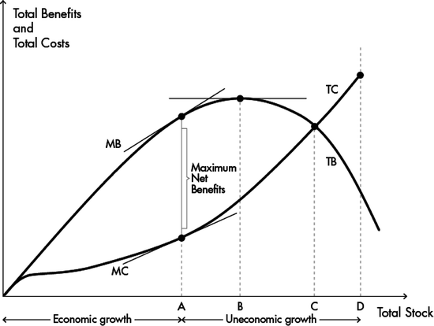

3.1 Introduction
Is there something new under the sun? This is the question asked by Historian John Robert McNeill (2000) drawing on verse 1: 9–11 from the Ecclesiastes. The verse, probably written in the third or the fourth century B.C., gave a negative answer to this question. Although there is much to learn from the verses of the Ecclesiastes, McNeill claims that there is indeed something new under the sun. True, the ubiquity of wickedness and vanity may have remained as much as part of human life today as it was when the Ecclesiastes was written, yet the place of humankind within the natural world is not what it once was. The global magnitude and devastating impact of the human scale on the rest of the biosphere is something truly new under sun. In contrast, while the magnitude and impact of the human scale on the biosphere is new, the intellectual debate on it is not. It has been taking place for the last 40 years, albeit with dissimilar intensity. What is meant by the impact of the human scale on the biosphere? There are two physical interrelated magnitudes: the size of the human population and the size of man-made capital ‘population’. These populations live off the biosphere; broadly speaking they take its resources, transform them, and return them back to it in the form of waste and pollution. These physical magnitudes are commanded by non-physical magnitudes such as preferences, knowledge (e.g. non-embodied technology) and the social institutions that govern production and distribution (e.g. markets, the state, et cetera). Both physical and non-physical magnitudes are parts of what is called the economic system.
On the scale of the population there exists a wide consensus that it cannot perpetually grow, for the planet does not physically grow and there are limitations to its ecological functions to support not only but particularly human life. Today, this debate seems beside the point because some of the most populous countries, after years of population control policies, already have fertility rates even below replacement level. Globally, fertility rates are slowly tending towards stabilisation. In contrast, on the general scale of a given economy the consensus that it cannot perpetually grow for the same reasons that population cannot do it is still absent. Economic growth – measured as Gross Domestic Product (GDP) at constant prices – as an all-encompassing economic policy remains firmly established. Challenging economic growth started in the late 1960s, when some economists and natural scientists began to understand that the pursuit of perpetual economic growth was physically impossible. It will eventually end. Ignoring this physical impossibility, they argued, would bring a wide array of evils, that is, it would make ecological problems more intractable, it would make the abusing of other sentient beings unavoidable, and it would further exacerbate all kind of social conflicts at different levels. What is new under the sun would intensify what was not new. At the international level, these arguments remained however, largely without political implications through the inauguration of the Sustainable Development discourse. Currently, and in view of the fact that our growing global economy has already overshot the carrying capacity of the planet, there are renewed calls articulated mainly from social thinkers in Western Europe for ‘de-growth’.
The aims of this chapter are (1) to provide a summary and analysis of the growth debate hitherto and (2) to scrutinise and compare alternative policy proposals. The structure of the chapter is the following: summary and analysis of the growth debate from the late 1960s until present are dealt with in the next section. In Sect. 3.3, I describe the theoretical underpinnings, the basic model and some policy recommendations for institutional change in order to achieve and eventually to manage a steady-state economy. The steady-state economy was conceived by one of the founding fathers of Ecological Economics, Herman Daly. In Daly’s conception, the optimal scale of the economy replaces economic growth as the overall goal of macro-economic policy. In Sect. 3.4, I explore the ideas of the principal intellectual figure behind the emerging de-growth movement, Serge Latouche. He argues for a cultural change that would, physically speaking, de-grow the economies of rich countries in order to ‘make room’ for development in poor countries, while at the same time severely criticising the very notion of ‘development’. In Sect. 3.5 a comparative analysis of Daly’s and Latouche’s ideas are provided. Conclusions and prospects for the social sciences are dealt with in Sect. 3.6.
3.2 The Growth Debate: Its Sources and Contours
The discussions in this section will be set against two backgrounds: (1) the prevailing economic doctrine alone with some relevant events, and (2) the global ecological footprint metric (see Fig. 3.1). Two prevailing economic doctrines can be distinguished in this period. First, Keynesianism which was adopted and largely implemented after the great depression of 1930 as well as during the post-war period in the West. It lasted until the early 1970s. The application of the ideas of J.M. Keynes constituted incidentally the beginning of an active pro-growth policy after the great depression and the split of economics between macro- and micro-economics.1 The 1970s saw the end of the convertibility of the dollar to gold (1971), high oil prices (1973–1986), a stock market crash, and an economic crisis (1973–1975) in two core countries, the United States (US) and Britain. Following this, a political window of opportunity was seized by a revitalised laissez-faire or neo-liberal intellectual movement prominently represented by F.A. von Hayek and M. Friedman. Neo-liberal doctrines were partially implemented in the West, but even more in its zones of influence and later worldwide after the collapse of the Soviet Union (1991). This phenomenon was later labelled as ‘globalisation’.2 After the preceding economic crisis (2008–2009), there was a temporary renaissance of Keynesianism including its ‘greened’ version that had been proposed to come to grips with the ecological predicament. In recent times, however, Keynesianism seems to have been reduced to a minor option given the current multi-crisis of high oil and commodity prices, US fiscal problems, and the Eurozone debt crisis, in which austerity forces seem to have won the overhand. This information is placed on the x-axis of Fig. 3.1.
Fig. 3.1
Global ecological footprint (1960–2007), eight relevant publications and two macro-economic doctrines (Ewing et al. 2010. Modified by the author)
The global ecological footprint is an aggregate index which measures the ability of the biosphere to produce crops, livestock (pasture), timber products (forest), fish, to host built-up land, as well as to uptake carbon dioxide in forests.3 Carbon dioxide emissions are the largest portion of humanity’s current footprint. The ecological footprint is less controversial than other ecological metrics.4 Figure 3.1 depicts the ever rising global ecological footprint in the period 1961–2007. Humanity started to overshoot the world carrying capacity, or ‘biocapacity’, roughly in 1975. By 2007 it was ‘using’ 1,5 planets.5 In that year, the last one in which the metric was estimated, half of the ecological footprint was attributable to just 10 countries, whereby the US and China alone were using almost half of the earths’ biocapacity with 21% and 24% ecological footprint respectively (Ewing et al. 2010: 18).6 Figure 3.1 also shows eight publications which are milestones in the economic growth debate. It is around the message of these publications that the discussion will be centred, whereby Steady-State Economics (1977) and Farewell to Growth (2009) will be dealt with in greater detail in two separate sections.
3.2.1 Scarcity, Pollution and Overpopulation
The origins of the economic growth debate lie in the late 1960s and the early 1970s, when a bundle of ecological concerns articulated primarily by natural scientists converged in rich countries.7 A general public preoccupation with pollution and the political backdrop of the ‘environmental revolution’ was the book Silent Spring (1962) authored by Rachel Carson. Concerns about scarcity emerged with the dramatic increase in world population. This concern was epitomised by Paul Ehrlich’s book The Population Bomb (1968). While the environmental discussion was primarily framed by natural scientists and the emerging political activism of the late 1960s, the most important social discipline was also taking position in that debate: economics.8 In the US the think-tank Resources for the Future was established in 1952, which, in line with governmental concerns on potential shortages of raw materials published Scarcity and Growth authored by Barnett and Morse (1963). This study turned into economic orthodoxy (Daly 1991: 40, Dryzek 1997: 46). The emphasis of the study was to show that resource scarcities do not impair economic growth. The authors revised the classical economic doctrines of resource scarcity and compared them with what they called the contemporary ‘progressive world’ (Barnett and Morse 1963: 234). They concluded that technological innovation, resource substitution, recovery and discovery of new resources made Malthus’ and Ricardo’s doctrines basically obsolete. These mechanisms would function not only better within the free-market system, but also more rapidly as to broaden the availability of resources, even making the definition of ‘resource’ uncertain over time. Therefore: ‘A limit may exist, but it can be neither defined nor specified in economic terms […]. Nature imposes particular scarcities, not an inescapable general scarcity’ (Barnett and Morse 1963: 11). With respect to pollution, economists were borrowing from the thought of its welfare economists’ precursors. The concept of externality, already familiar from the writings of Cecil Pigou in the 1920s and Ronald Coase in the 1960s fitted nicely into pollution issues (Pearce 2002). The economist’s mission became the design of allocation mechanisms capable of realising foregone costs and benefits. As leading environmental economists Baumol and Oates in their textbook observed: ‘When the ‘environmental revolution’ arrived in the 1960s, economists were ready and waiting’ (1988: 1). For economists, doubts about the feasibility or desirability of economic growth were not raised. Beyond economic orthodoxy, human ecologists were further drawing attention to the world’s population increase, mainly territorially restricted to poor countries,9 while the expanding environmental movement was concluding that the mounting ecological problems were rather caused by ‘consumerism’, and more broadly by wasteful lifestyles. As wasteful lifestyles became synonymous with the pursuit of economic growth, the ‘antigrowth’ movement was born (Pearce 2002: 60).
However, it was not only the emergent environmental movement which perceived economic growth as the problem. The position of economists concerning the link between economic growth and the natural environment also began to show fissures. The discussion did not focus only on the concepts and relationships between a given set of assumptions, but also on the assumptions which themselves sustain the superstructure of macro-economic theories which made possible the belief in perpetual economic growth. In the list of economic assumptions nature was missing. ‘Land’ had been long since reduced to merely an input factor, deprived of all environmental functions and any traditional social meaning; and the newly re-emphasised ‘externality’ was seen rather as an exceptional case, therefore constituting a half-hearted ad hoc recognition of the sink function of nature in the economic process. As historian McNeill (2000: 335) put it: ‘if Judeo-Christian monotheism took nature out of religion, Anglo-American economists (after about 1880) took nature out of economics’. The expansion of ecological problems was caused by the fact that economists were living in the ‘cowboy economy’ of the ‘illimitable plains and also associated with reckless, exploitative, romantic, and violent behavior’, while humanity were rather approaching the ‘spaceman economy’ in which the earth was a ‘single spaceship, without unlimited reservoirs of anything, either for extraction or pollution’ (Boulding 1966: 6).10 In the spaceship economy, perpetual economic growth was physically unfeasible and given the ensuing social and ecological costs of post-war growth not even desirable, as British economist Mishan (1967) reasoned. Mishan condemned what he called the ‘growthmania’ suffered by his fellow economists and professional politicians. However, comprehensive explanation and modelling of growth-related problems would only be offered in the following years.
Ayres and Kneese (1969) published their Production, Consumption and Externalities in which they showed, partially consonant with the arguments already made before by Kapp (1950) that externalities were not exceptional cases but rather an inherent part of the economic process. This seminal article would in due course give birth to the discipline Industrial Ecology. Similarly, Environment, Power and Society (1971) authored by pioneer ecologist Howard T. Odum attempted to frame the relationship between human and natural systems in terms of matter and energy analysis, equally showing the inherent production of waste/pollution which necessarily returns to the natural environment. This work would bring a number of young ecologists into what later would be called Ecological Economics. Nicholas Georgescu-Roegen a former student of Schumpeter published The Entropy Law and the Economic Process (1971), a book in which he explained from a historical perspective, the weak spot of economic orthodoxy in handling the issues of depletion and waste/pollution. In the formative years of economics as a science, it borrowed the mechanistic/circular outlook from Newtonian physics; hence the economist was failing to account for irrevocable linear processes occurring to energy/matter in the process of economic transformation. From this perspective, Herman Daly, a student of Georgescu-Roegen, proposed the stationary-state economy (1971) which he felt should replace the growth-policy as an overall societal objective. Georgescu-Roegen on the other hand would later insist on a de-growth policy.
This fertile intellectual activity and debate between 1966 and 1971 took place mainly in the limited arena of academia. Projecting the discussion beyond this was the achievement of a team of natural scientists at the Massachusetts Institute of Technology who published in March 1972 a small report entitled The Limits to Growth.
3.2.2 Understanding the Whole
According to the scientist team, the failure of adequate political responses to tackle environmental and resource problems were due to a lack of understanding of the human system as a whole: ‘we continue to examine single items in the problematique without understanding that the whole is more than the sum of its parts’ (Meadows et al. 1972: 11, italics in original text). Using the new system dynamics methodology developed by Jay Wright Forrester and the computer model World3, the authors of Limits to Growth (LtG) examined the interaction of five key subsystems of the global system: population, industrial production, food production, pollution and natural resources. They assumed that population and industrial production were growing exponentially, in a world with absolute fixed available resources. The time scale of the modelling ranged from 1900 until 2100. As the team abundantly emphasised, the world model was not intended to make exact predictions (Meadows et al. 1972: 93, 94, 122) given the extreme complexity and uncertainties involved in the real world. Their aim was rather to understand the global system’s behavioural tendencies and to offer a plausible answer to the question: are our current growth policies leading to a sustainable future or to a collapse?
Figure 3.2a, b show two scenarios of the world model from a total of seven. Figure 3.2a plots historical values from 1900 to 1970 until 2100. It assumes no major changes in historical socio-economic relationships. It is the ‘standard run’ which illustrates that the world is ‘running out of resources’ in the first decade of the twenty-first century, while population collapse occurs in the middle of it. As industrial output increases exponentially, it requires an enormous input of resources. Resources becoming scarce led to a rise in prices which conversely left less financial capital to be re-invested for future growth. Ultimately, investment did not keep up with depreciation and the industrial base fell along with agricultural systems which became dependent on industrial outputs such as fertilisers, pesticides, and especially, energy sources for mechanised agriculture. Population continued to increase for approximately two decades and finally started to decline when the death rates were driven upward by a lack of food and health services. The team ran five more scenarios in which the initial assumptions made in the standard run were additively relaxed. Nonetheless, in each case the population inevitably collapsed during the twenty-first century due to an ever rising pollution, food shortages, and so on. Figure 3.2b plots an aggregate scenario of several technological and political responses to shortages. Technology is being implemented in every sector: nuclear power, recycling, mining the most remote reserves, withholding as many pollutants as possible, pushing further yields from the land and having ‘perfect birth control’.11 Population collapse has simply been delayed by several decades. In this scenario, three crises hit simultaneously, food production drops because of land erosion, resources are depleted by a prosperous population holding an average income per capita of close to the US level, pollution rises, drops and then rises again dramatically causing a further decrease in food production.
Fig. 3.2
Two scenarios of the world model: (a, left) standard run, and (b, right) comprehensive use of technology (Meadows et al. 1972)
The study was presented at a perfect time, as the first United Nation Conference on the Human Environment was held in June of that year 3 months after the study was released. Nevertheless, the policy goal of stabilisation which the team proposed and which happened to resemble Daly’s idea of the stationary-economy (zero-growth) advanced 1 year before was largely dismissed. According to Beckerman (1972), delegates of poor countries made it profusely clear that they were not going to accept any policy arising from the study of some uncertain planetary limits that would hamper their future development. Henceforth, international relations could continue to operate under the frame of development set out by the US president Truman in his inaugural address of 1949, that is, actively reducing trade barriers and making the benefits of industrial progress available ‘for the improvement and growth of underdeveloped areas’ (Truman 1949). Additionally, LtG was unanimously rejected by leading economists (Beckerman 1972, Kaysen 1972; Solow 1973, 1974; Beckerman 1974). The common argumentative line was that technological progress and the market mechanism could prevent scarcity and pollution from constituting a substantial limitation on long-term economic growth. In essence, their way of looking at the problem was identical to that established by Barnett and Morse a decade before. Cole et al. (1973) re-ran the world model, yet they eliminated absolute limits of resources and let them increase pari passu with population and consumption, assuming additionally total control of pollution. They claimed if ‘the rates of (technological) progress are increased to 2% per annum collapse is postponed indefinitely’ (Cole et al. 1973: 118).
The emerging economic heresy also contributed to the LtG debate. They were particularly emphatic about the incongruences and fallacies committed by their orthodox colleagues (Daly 1972: 949–950, Georgescu-Roegen 1975: 363–366, Mishan 1977). Georgescu-Roegen, for example, was impressed by the fact that many of the critiques made by economists on the methodology employed in LtG, was the very same which they themselves routinely used.12 They condemned LtG for having used the assumption of exponential growth; nonetheless, economists themselves have always suffered from ‘growthmania’. Economic plans have been designed with the explicit aim of obtaining the highest rate of growth possible and the very theory of economic development is firmly anchored in exponential growth models. Furthermore, some of them used the very same argument of exponential growth – but applied it to the ‘increase’ in technological progress in order to criticise LtG. This argument besides being circular, is fallacious on other grounds. Technology is a non-physical entity – unless it is embodied in capital – that as such cannot (exponentially) grow as a population does. Georgescu-Roegen concluded that economists proceeded according to the Latin adage: quod licet Iovi non licet bovi – what is permitted to Jupiter is not permitted to an ox (1975: 365).
Six years later, after LtG’s release, Daly published his Steady-State Economics (1977). The book was a collection of essays which dealt with logical inconsistencies made by pro-growth proponents, and expanded on physical and economic motives for a stationary but developing economy. Chapter 4: ‘A Catechism of Growth Fallacies’ dealt with 16 fallacious arguments. Four of them were of particular significance to reproduce here given their endurance: (1) becoming rich through economic growth is the only way to afford the costs of cleaning up pollution: as Daly noted, this statement skips the relevant question of when economic growth will start to make a nation poorer and not richer. The problem is that economists do not attempt to compare costs and benefits of growth, apparently because it is tactility implied that growth is always ‘economic’. (2) Growth is necessary to combat poverty: Daly argued that in spite of the growth of the preceding years in the US, there was still poverty. The benefits of the reinvested surplus which generates growth go preponderantly to the owners of the surplus, who are not poor and only some of the growth dividends ‘trickle down’. For growth-economists, Daly further reasoned, growth has become a substitute for inequality concerns. Yet, with less inequality, less growth and consequently less ecological pressure would be required. (3) Growth can be maintained by further shifting the economy to the service sector: Daly argued that after adding the indirect aspects of services activities (inputs to inputs to inputs, that is, Leontief’s input–output-analysis), we will likely find out that they do not pollute or deplete less significantly than industrial activities. Casual observation shows that universities, hospitals, insurance companies, and so on, require a substantial physical base. The reason why employment in the service sectors has grown relative to total unemployment is because of the vast increase of productivity and total output of industry and agriculture which conversely has required more throughput given the increased scale. (4) Oil is not recycled because it is still uneconomic to do so; humankind is less worried about the environment because it is currently not totally dependent on it, and nature imposes no inescapable scarcities: According to Daly these arguments can only be made given economist’s illiteracy in basic natural sciences.
Notwithstanding these arguments – which were largely ignored – orthodox economists contributed to producing the general impression that LtG was simply pessimistic, and predicting something alone with the reaffirmation that technological progress would cope with all sorts of ecological problems. In contrast, LtG did contribute to popularising the sustainability debate which was emerging at that time by selling millions of copies and being translated into 30 languages (Meadows et al. 2004: x), even influencing the opinion of leading politicians in Europe. Sicco Mansholt, the president the European Commission (1972–1973) read LtG and concluded that growth in Europe should not only be stopped but even reduced, and replaced with another ‘growth’, that is, the growth of culture, happiness and well-being (Mansholt 1972).
In the late 1970s, the US was re-entering another economic crisis and successive efforts were focused on monetary policy in order to fight inflation at the cost of employment creation, thus risking a deeper recession. Almost simultaneously humankind was entering a global era of planetary overshoot (Fig. 3.1). The oil embargo imposed by the Organisation of Petroleum Exporting Countries (OPEC) upon rich countries in 1973 helped to trigger not only an economic stagflation but also a debate on energy dependency. Subsequently, an energy policy embracing (1) nuclear power and (2) energy efficiency measures was discussed and partially implemented. As industrial growing economies need correspondingly increasing amounts of energy, and a part of the energy must be produced at home instead of being imported from countries located thousands of kilometres away, the vital but visible nuclear reactors rapidly produced a social response which had been in gestation years before: rejection. In 1969 physicist Starr had already proposed a risk-benefit analysis by means of ‘historically revealed social preferences’ (Starr 1969: 1232) with favourable results for nuclear power and speculated on the causes of the irrational risk perception by the lay public which was generating the opposition.13 Later on, the social conflict was renamed the not-in-my-backyard syndrome (NIMBY), elevated into an analytical concept, and extended to all kinds of facility siting conflicts. Nonetheless, after the Three Mile Island incident of 1979, it was evident that the risk aversion and the nimbysm of the lay public could not be entirely dismissed as irrational. On the issue of energy efficiency and conservation policies, two energy economists were raising doubts about the effectiveness of such policies. They were resuscitating Jevons’ conclusion made more than a 100 years ago that, contrary to common expectations, energy efficiency improvements would lead to more energy consumption, that is, such policies would ‘backfire’ (Brookes 1979, Khazzoom 1980). Hence, alone with the revival of the pessimism of the so-called Neo-Malthusians, the pessimism of Neo-Jevonians also came about. By 1980, another pessimist report was released in the US, the Global 2000 Report for the President that, as the title implies, did not look as far ahead as LtG. The major finding was that:
If present trends continue, the world in 2000 will be more crowded, more polluted, less stable ecologically, and more vulnerable to disruption […]. Despite greater material output, the world’s people will be poorer in many ways than they are today. (Quoted by Dryzek 1997: 28)
Georgescu-Roegen would have certainly said because ‘of greater material output’. Nevertheless, the timing for pessimistic antigrowth positions could not be worse, for an era of exuberance would begin which could not handle the pessimism of the preceding years. In the core countries of the West, the US and Britain, a new formula for economic growth was proposed, (allegedly) away from state interventionism, and thus strong labour unions would be put in place: neo-liberalism. The optimism of the new era found its place in the ecological debate concerning economic growth through what would be later called ‘cornucopianism’.
3.2.3 The Sustainable Development Discourse
In congruence with the rising optimistic era of neo-liberalism but acknowledging that there were real ecological issues at stake, the United Nations (UN) created the World Commission on Environment and Development. The commissions was established in order to investigate the links between the deterioration of ecological systems and economic growth in 1983, the same year in which the newly formed Green Party in West Germany managed to win enough votes to trespass the election threshold for federal parliament. The world commission was the follow up of the conference held in 1972, and it is better known by the name of its chairwoman, Mrs. Brundtland. The commission delivered the report Our Common Future in 1987, roughly a year after the optimism of infinite energy supply was shattered anew by the disaster of Chernobyl.
On the political consequences of conceptual ambiguities and the strong anthropocentrism of the report enough attention has been drawn.14 For the aims of this chapter it is useful to highlight the origins of these ambiguities and the ambiguities specifically in relation to growth. If Sustainable Development (SD) was to have a chance of future implementation, it had to have an appeal of political acceptability in order to initially bring different interests to the table of negotiation. Nevertheless, and according to political scientist Dryzek (1997: 124), as it was recognised that sustainable development would become the global dominant discourse, powerful actors, mainly big businesses, made sure to cast it in terms which were favourable to them. Ultimately, sustainable development was politically successful, but it achieved this by sacrificing substance: ‘lots of lobbyists coming together, lots of blurring going on – inevitably, lots of shallow thinking resulting’ was the judgment of historian Donald Worster (1993: 143). To be sure, the difficulties lay in putting together the relatively well-framed ‘sustainability’ and ‘development’. Sustainability was at the bottom an ecological concept traceable to the German enlightenment. What is to be sustained is the environment, although mainly for human purposes.15 On the other hand the notion ‘development’, as previously noted, was established by the emerging leader of the West in 1949.16 Given the ecological debate of the preceding years in the US, and the increasing appeal of the notion ‘qualitative growth’, that is, more leisure for family and hobbies during the 1970s and 1980s in Germany and France among others,17 it was evident that the general economic policy goal of growth was at stake. The question to be solved was then: how to maintain the perpetual economic growth policy if the planet has ecological limits?
Although, as noted before, the report was (inevitably) a product of political bargain, it is necessary to understand how the report coped with the dilemma, especially the arguments pertaining to needs and ecological limits so central to the growth debate. The emphasis was first placed on poor countries, who were after all the ones to be aided with their development. Here, essential needs were defined in conventional terms: food, clothing, shelter, and jobs. It was also accepted that beyond them, the poor have the legitimate aspirations for an improved quality of life (WCED 1987: 43). When the report switches into the realm of the rich, needs become perceived, socially and culturally determined what possibly drives up levels of consumption. Therefore, it is reminded that in the context of sustainability, values encouraging ‘consumption standards within the bounds of the ecological possible and to which all can reasonably aspire’ (ibid.: 44) are required. Although reaching ecological limits can be slowed through technological progress ‘ultimate limits there are’ (ibid.: 45). Since sustainable development also involves equity, equitable access to the constrained resources ought to be granted before the ‘ultimate limits’ are reached. From these premises relating to frugality, equity and time-bounded growth because of ultimate limits the conclusion was however:
The Commission’s overall assessment is that the international economy must speed up world growth while respecting the environmental constraints. (ibid.: 89)
How to speed up world growth, that is, economic growth for both rich and poor countries, while respecting ecological limits? The solution advanced was a change in the quality of economic growth, but not in the sense advanced in Europe years before. Qualitative growth meant rather that growth must become less energy/matter intensive and more equitable in its impact (ibid.: 52). On this general recommendation some comments are needed, for the official environmental discourse became locked in sustainable development until the present.18
First, the report was advising something that one of the main drivers of global economic growth, the manufacturing sector, had been doing since the industrial revolution, namely becoming less energy/matter intensive. In Canada, the US and Germany, energy intensity (ratio of energy use to GDP) declined after about 1918, in Japan after 1970, in China around 1980 and Brazil in 1985. The US used half as much energy and emitted less than half as much carbon per constant dollar of industrial output in 1988 as in 1958. For the world as a whole, energy intensity peaked around 1925 and by 1990 had fallen by nearly half (McNeill 2000: 316). However, these global happy trends of ‘dematerialisation’ and ‘decabornisation’ obscured the trends in industrial expansion. In fact, industry had been too successful in this domain, inasmuch as when consumers were not able to cope with what manufacturing industries were putting on the market, it started to produce consumers at home and to lobby for free trade abroad – a foreign policy already practiced by the first industrial nation Britain. What was happening entered the intellectual radar of economist John K. Galbraith (1958), who resuscitated the forgotten Say’s law: a growing supply creates its own growing demand. Yet his arguments found little response from his colleagues, who two decades before restricted the boundaries of the study of economics as being unresponsive about the inquiry on the origins preferences.19 The social-engineered cultural change partially accomplished by advertising techniques was investigated in the US by Vance Packard (1960). He described the birth of easy-credit and the general inculcation of self-indulgence in the management of money, as well as the commercialisation of virtually every aspect of life, and the technique of built-in ‘progressive obsolescence’. Progressive obsolesce was introduced by both lowering standards of quality by design and psychologically outmoding products after a given time.20 Growth became de facto a self-contained policy rather than a mean to achieve a societal goal, since the ‘private economy is faced with the tough problem of selling what it can produce’ (Packard 1960: 17). What is important to highlight from this process is what Packard and Galbraith troubled at that time, namely that the consequences for social welfare were neglected, let alone the political and ecological consequences of which Packard was not unmindful. The topic would be discussed years later by Erich Fromm (2007) and Fred Hirsch (1977), yet all of these growth caveats had little incidence in the Brundtland report.
Second, the fact that becoming even more efficient leads to an increase of throughput (input + output) went rather unnoticed. This was presumably because the revival of the Jevons’ paradox was accomplished a couple of years before it became irrelevant at the political level as oil prices returned by the mid-1980s to their customary level. Third, the rationale that already rich countries must further pursue economic growth by consuming even more was that of helping poor countries with their economic growth as they are ‘a part of an interdependent world economy’ (WCED 1987: 51). The alternative that poor countries could create their own markets by selling necessities to each other instead of selling ‘even more extravagant luxuries to the jaded and harried rich’ (Daly 1991: 151) or allowing for import-substitution as had been put forward by Latin American economists in the 1970s and practiced with some success in the region, was entirely neglected. The mainstream doctrines of economic development that prevailed at the time in which the Brundtland report was embedded did not permit this. The policy of perpetual economic growth for the entire planet remained virtually intact in spite of discussions regarding the issue in the preceding years. Indeed with SD, the intellectual debate was politically settled (Du Pisani 2006: 93) – with one single exception: population growth. The report mentioned as a ‘strategic imperative’ the realisation of a ‘sustainable level of population’ (WCED 1987: 49). The combination of free trade and population control policies in poor countries were indeed, mildly put, suspicious.
After the UN Conference on Environment and Development (UNCED) held in Rio de Janeiro in 1992, sustainable development became gradually operationalised. The firmly established ‘qualitative growth’ has made it possible to talk ever since about ‘patterns’ of consumption and production, and to carefully avoid less consumption and production. This is despite the fact that during the earth summit which endorsed the Agenda 21, it was argued that global ecological problems arose as a result of profligate consumption and production in rich countries.21 When the report was launched, the global economy required roughly 1,1 planets, hence, humanity had started to live from the natural capital, and not from its income. By the publication date of the report there was of course no ecological footprint metric, but LtG had been around for 15 years. Additionally, just 1 year before the report’s publication, a group of natural scientists had published another study showing that humans were already appropriating 25% of the global potential product of photosynthesis (terrestrial and aquatic), and that when only terrestrial photosynthesis was considered, the fraction increased to 40% (Vitousek et al. 1986).
By 1989 the Washington consensus was formulated and the receipt was applied to poor countries which had previously become over-indebted; partially as a result of the pressures to reinvest the so-called ‘petro-dollars’ gained from the OPEC embargo in the 1970s which flooded development banks. The Washington consensus contained items such as the redirection of public spending from subsidies into pro-growth services, namely primary education, health care and infrastructure; trade liberalisation and privatisation of state enterprises; in short, the well-known Structural Adjustment Programs of the International Monetary Fund (IMF). In the same year, the Berlin wall fell and the process of German reunification began, thus shifting attention away from the previous discussions of reforming the Keynesian stability-act (1967) for the purposes of ‘qualitative growth’ – in the West German sense. After the Soviet Union collapsed in 1991 and the ‘end of history’ was proclaimed, neo-liberal doctrines conquered not only the Soviet Union but also its former influence’s zones as to transform them into a more efficient growth machines than they had been previously (McNeill 2000: 334). The world entered the era of globalisation institutionally rounded up in 1995 when the World Trade Organization (WTO) emerged out of the culmination of the Uruguay Round of negotiation of the General Agreement on Tariffs and Trade.
By 1992 the World Bank (WB) published its World Development Report entitled Development and the Environment embracing without conceptual difficulties as the following anecdote shows: during a session in which the schematic representation of the economy was being discussed, the WB’s chief economist Lawrence H. Summers refused to draw a larger box around the smaller box representing the economy.22 The larger box would represent the natural environment as suggested by Herman Daly, who was serving as senior economist at the WB’s environment department. Why refuse something so simple and evidently true? As Daly explains, it was because of the subversive iconographic suggestion that the economy could not grow in perpetuity given the limits that the environment imposes. Moreover, ‘a preanalytic vision of the economy as a box floating in infinite space allows people to speak of ‘sustainable growth’ – a clear oxymoron to those who see the economy as a subsystem’ (Daly 1996: 7. Italics in original text).
3.2.4 Between ‘Cornucopians’ and Cautious Optimists
According to Dryzek (1997: 30–31), the fact that an economist of Kenneth Arrow’s intellectual calibre and reputation co-authored a paper stating that the resource base is finite and that there are ‘limits to the carrying capacity’ (Arrow et al. 1995: 108) is an effect of the field of Ecological Economics pioneered by Kenneth Boulding, Nicholas Georgescu-Roegen and Herman Daly. The authors focused on unravelling the fashionable claim that economic growth and free trade (export-led growth) in poor countries (development23) are in the long run beneficial for the environment, a claim that, as noted before, had already been made in the 1970s. During the 1990s it came to be known as the Kuznets’ curve hypothesis. It postulated an inverted U-shaped curve which described the relationship between per-capita income and indicators of natural and resource quality, that is, when a poor country becomes rich through export-led growth, only then will its population start to become preoccupied with environmental quality. As Arrow et al. explained, the Kuznets’ curve hypothesis had been shown just for a selected set of pollutants, yet orthodox economists have conjectured that the curve applies to environmental quality in general. Moreover, they were neglecting the export of pollutants from rich to poor countries effectively done by offshoring highly polluting industries, the purposeful policy implementation to reduce environmental impacts in rich countries and finally, that sometimes environmental concerns are not only about increased demands for environmental ‘quality’, as the resilience of ecosystems upon which communities depend can be irreversibly damaged.24
Two years after the article appeared, and 10 years after the launching of the Brundtland report, the influential British magazine The Economist published in its Christmas special edition an article with the title Plenty of Gloom (Anon 1997). The article attempted to show their readers by means of time-series graphs the predictive errors made in the past by Malthus, concluding that there was no reason to believe in their modern proponents. The article was important as it epitomised reasonably well another persuasive position going beyond the trend set by Barnett and Morse in 1963.25 The so-called ‘cornucopians’, famously represented by economist Julian Simon. The cornucopian rationale is the following: minerals, food production have been made plentiful in the past, standards of living and life expectancy have been risen, and technological substitution has taken place many times. By extrapolating these past trends into the future, in which the basic metric of scarcity are market prices, it is concluded that the reason for growth pessimism is without substance. For example, on the issue of oil which is the ‘master resource’, Simon stated that we will never run out of it (Simon 1996: 179). His argument was however, subtler and the phrase misleading. In his view, it is not the oil that is important, but its service: energy. Indeed, the service of energy can be delivered by other sources rather than oil (substitution). As we will never run out of oil (energy), and energy will become increasingly cheap as in the past, it
… would enable people to create enormous quantities of useful land. The cost of energy is the prime reason that water desalination now is too expensive for general use […]. If energy costs were low enough, all kinds of raw materials could be mined from the sea. (Simon 1996: 162)
All of this is possible because the ‘ultimate resource’ is after all human inventiveness (technology), which is ‘unlimited’. Prominent orthodox economists such as Beckerman never went so far as Simon, but Beckerman had also been using time-series in order to show that there is little reason to attend the warnings of natural scientists and derailed economists – the former ones have been wrong too many times (Beckerman 1974, 1995). Beckerman additionally disdained the sustainability discourse for being ‘morally repugnant’ (Beckerman 1995: 125). He argued that needs are subjective, and poverty is the contemporary world malady to be tackled – certainly through economic growth, for the entire world, and using the standard instruments of neo-classic economics to tackle scarcity and ecological problems.
The Economists’ article presented a set of figures taken from the Food and Agriculture Organisation and the WB, showing declining price of metals and food. It was argued that despite the fact that the world population almost doubled from 1961 to1995, food production had more than doubled, even resulting in falling food prices. Other tragedies predicted but which turned out to be wrong, according to the magazine were rising cancer rates because of pollution, forest decline in Germany in the 1980s caused by acid rain and famines due to population increase. Later, the journal of Environment and Development Economics called for a response to the Economist’s article. It was attended by 12 scientists: 9 environmental economists, 2 ecologists and a climate scientist. They responded in the Policy Forum section of the journal and argued about the absence of markets and property rights on environmental services but also about the complexity and uncertainty in socio-ecological systems, and the non-linearity of numerous ecological processes. I will go into some detail regarding two arguments which reflect, in my view, the gained influence of Ecological Economics and Industrial Ecology upon Environmental Economics. The arguments are: (1) the problem with time series statistics versus processes and (2) the ‘Heisenberg Principle’ (Portney and Oates 1998: 531) which is at work when a prediction is made.
1.
Time series statistics versus dynamic processes
Using time series to show that natural scientists were wrong is a weak argument because it does not take into account the natural resource-base upon which production depends (Dasgupta and Mäler 1998). In agriculture, for example, increased food production (green revolution) had been achieved by monocultures, pesticides, fungicides, soil depletion, and so on (Krebs 1998). Hence, the question to be asked is not only if we can produce more food, but what are the long term ecological/social consequences of doing so in the way it is done. On scarcity, Dasgupta and Mäler (1998) pointed out that price can be a very bad indicator. In fact, prices can decrease while the resource in question also becomes scarcer.26 Krebs (1998) argued that for predictive purposes, the understanding and modelling of underlying dynamic processes are more promissory than simple time series statistics.
2.
Heisenberg principle
Portney and Oates (1998) and Polin (1998) stated that the act of observing and forecasting social events is likely to affect the outcome. Hence, the previous predictions made by natural scientists raised awareness of looming problems, namely exponential population growth, ozone layer depletion, the effects of acid rain on German forests, and so on. The raised awareness was conducive to political action which prevented the prediction from coming true and which stopped damaging activities. Levin (1998: 527) affirmed that ‘the greatest reward for one predicting catastrophe is to stimulate the implementation of measures that invalidate the predictions’.
These answers were very significant, and as far as I know, The Economist did not refute them – although it might have shaped opinion more effectively than the responses of a scientific journal with a specific and limited audience. As one of the main targets of ridicule was LtG, several scientists’ responses sadly repeated the distortions made years before, for example, on the alleged predictions that LtG made (Hammitt 1998: 511, Perrings 1998: 491), and the supposed failure of taking into account technical change (Portney and Oates 1998: 530). On predictions, the following is one of the many phrases written by the LtG’s authors:
This process of determining behaviour modes is ‘prediction’ only in the most limited sense of the word … these graphs are not exact prediction […] They are only indications of the system’s behavioral tendencies. (Meadows et al. 1972: 92–93. Italics in original text)
With regards to the fact that technical change was not taken into account (Fig. 3.2b). Finally and as previously mentioned, Krebs (1998) maintained that the understanding and modelling of underlying dynamic processes is superior to simple time series statistics. Nevertheless, Krebs failed to give proper recognition or to defend the LtG team who inaugurated these types of studies.27
The attention on LtG also raised the central question concerning economic growth, since after all, LtG’s central tenet is that economic growth (and population growth) is in the long run simply impossible and a failure to recognise that would be calamitous. The only comment in this direction was made by environmental economists Dasgupta and Mäler (1998: 505) who expressed that:
By concentrating on welfare measures, such as GNP and life expectancy at birth, journalists, political leaders and, frequently, even economists, bypass the links that exist between population growth, increased material output, and the state of natural-resource base.
They argued later that environmental problems are sometimes correlated by ‘some people’ with wrong sorts of economic growth. On the other hand, Kneese (1998) expressed gratitude to the magazine for reminding the readers that the impacts of economic growth on natural resources can and have been cancelled by technological progress. He explained that with endogenous growth theory, national economics do not growth like balloons, for efficiency in the use of energy/matter prevents them from doing so. Similarly, Kriström and Löfgren (1998: 525) asserted that endogenous growth theory ‘promises us permanent growth, due to constant returns to capital’. It may be worth reminiscing that endogenous growth theories simply attempt to account for the origins of technological progress which was previously treated as given, that is, ‘exogenous’ to the neo-classical growth models. However, exogenous or not, it does not handle the issue of scale or the Jevons’ paradox already mentioned, resulting in an impact on the natural environment and related social conflict. When this discussion was taking place, the global economy was already necessitating 1,2 planets, from which the largest share was what The Economist’s author dismissed as the ‘mother of all environmental scares’: global warming.
3.2.5 Climate Change
From the 1990s on, the focus of the debate on ecological problems shifted progressively from depletion to pollution, more specifically to greenhouse gas emissions (GHG) causing an increase in global average temperature.28 Climate change was put on the international political agenda at the Earth Summit in 1992 when the United Nations Framework Convention on Climate Change (UNFCCC) was created. The ultimate objective of the convention (article 2) was the ‘stabilization of greenhouse gas concentrations in the atmosphere at a level that would prevent dangerous anthropogenic interference with the climate system’, and in line with sustainable development it re-affirmed the objective of ‘sustainable economic growth’ within the context of the ‘open international economic system’ (UNFCCC 1992). The convention acknowledged several principles, such as the precautionary principle, the protection of the climate system on the basis of equity, the necessity that rich countries take the lead in combating climate change, and a consideration of the circumstances of developing countries. After 5 years of negotiations, the Kyoto Protocol with legally binding commitments was agreed in 1997. Thereafter, a political process of ratification began. The protocol included three international mechanisms in order to facilitate its implementation: International Emissions Trading, Joint Implementation Mechanism and the Clean Development Mechanism. According to Munasinghe and Stewart (2005: 2) these mechanisms were developed to specifically satisfy the conditions required by the US, yet the progress initially made suffered a reverse when the US government refused to sign the Bonn agreement – an extension of the Kyoto protocol – in July 2001. Two months later the US suffered a terrorist attack and the attention of the entire West shifted away from the climate change issue.
The visibility of the subject was again given a massive boost in 2006, when British economist Lord Nicholas Stern published his Stern Review. That the attention on climate change was brought back to the forefront by an economist indicated once again the extraordinary power of the profession.29 As Jackson (2009: 11) put it: ‘it’s telling that it took an economist commissioned by a government treasury to alert the world to things climate scientist […] had been saying for years’, namely that humanity is at crossroads. Climate change is a global and serious threat – and there is no doubt that it is anthropogenic. Climate studies have been compiled by the Intergovernmental Panel on Climate Change (IPCC) created in 1988. It has delivered four comprehensive reports thus far: 1990, 1995, 2001 and 2007. The following information is taken from the synthesis of the last IPCC report (IPCC 2007a).
Global atmospheric concentrations of greenhouse gases (GHG) such as carbon dioxide (CO2), methane (CH4), nitrous dioxide (N2O) and halocarbons have clearly increased since 1750 (pre-industrial times) as a result of an expansion in ‘human activities’, whereby halocarbons did not even exist in pre-industrial times. For example, the global atmospheric concentration of carbon dioxide, the most important anthropogenic GHG, increased from 280 parts per million (ppm) to 379 ppm in 2005. The major growth in GHG emissions between 1970 and 2004 has come from energy supply (fossil fuels), transport and industry. There is convincing evidence that the rising levels of GHGs emissions have a warming effect on the climate because of the increasing amount of heat energy (infrared radiations) trapped in the atmosphere: the greenhouse effect. In fact, the earth has become warmer since around 1900 by 0.7°C and it will continue to do so for the next two decades at a rate of 0.2°C for a range of emission scenarios, and 0.1°C per decade even if the concentration of GHGs is kept constant at 2,000 levels.
Increases in temperature estimates depend on specific emission trajectories for stabilisation which have been provided by the IPCC since 2001. They show, for example, that a doubling of pre-industrial level of greenhouse gases is likely to raise global average temperature by between 2°C and 4.5°C, with a best estimate of approximately 3°C, and that it is very unlikely to be less than 1.5°C.30 Presently neither adaptation nor mitigation can avoid climate change and expected impacts at all. Adaptation is necessary in both the short and the long term to the warming which will occur even for the lowest estimated stabilisation scenario: 445–490 ppm CO2e.31 Indeed, this will increase global average temperature by 2.0°C and 2.4°C. The stabilisation of GHGs’ concentrations in the atmosphere would need to peak and decline thereafter, and the lower the stabilisation level chosen, the faster the peak and the decline will occur. By now, humanity has years rather than decades to stabilise emissions of GHGs.32 The expected impacts of global warming are unevenly distributed according to sectors and regions. In the following paragraphs a summary of expected effects taken from the working group II (IPCC 2007b) is provided.
Ecosystems: The resilience of many ecosystems is likely to be exceeded this century. Climate change will lead to increased flooding, drought, wildfire, pest outbreaks, ocean acidification, land use change, pollution, and overexploitation of natural resources. With an increase in global temperature which exceeds 1.5–2.5°C, 20–30% of plant and animal species assessed thus far are likely to be at risk of extinction. In Latin America increases in temperature and associated decreases in soil quality and water availability are projected to lead to gradual replacement of tropical forest by savannah in Eastern Amazonia. In Asia, climate change will compound the pressures on natural resources associated with rapid urbanisation and industrialisation. In both Polar Regions, specific ecosystems and habitats are projected to be vulnerable as climatic barriers to species invasions are lowered.
Food: Globally, the potential for food production is projected to increase in some regions by an increased local average temperature in the 1–3°C range. Above this range food production will decrease. In seasonally dry and tropical regions, crop productivity will decrease for even small local temperature increases (1–2°C). It will augment the risk of malnutrition and weaken political efforts to attain food security, whereby Africa will be especially affected. By 2030, production from agriculture and forestry is projected to decline in Southern and Eastern Australia, and over parts of eastern New Zealand because of increased drought and fire. Similar projections are made for Southern Europe.
Coasts: Settlements located in coastal and river flood plains will be severely affected as sea level is expected to rise due mainly to the thawing of the Greenland ice sheet. In the meantime, gradual sea level rise is expected to exacerbate inundations, storm surge, and erosion, therefore threatening vital infrastructure, and facilities which support the livelihood of island communities. Coastal areas, especially the heavily populated regions in the South, East and South-East Asia, will be at the greatest risk due to increased flooding from the sea and rivers.
Health: The health of millions of people is projected to be affected because of increased malnutrition, deaths, diseases and injury driven by extreme weather events such as floods and higher concentrations of ground-level ozone in urban areas. Some health benefits from climate change are projected in temperate areas, such as fewer deaths from cold exposure. However, it is anticipated that these benefits will be outweighed by the negative health effects of rising temperatures. In Europe and North America climate change is also projected to increase health risks due to heat waves and the frequency of wildfires.
Water: Climate change will exacerbate current pressures on water resources from population growth and land use change such as urbanisation. Many semi-arid areas such as the Mediterranean Basin, Western US, Southern African and North-eastern Brazil will suffer a decrease in water resources. Runoff from changes in precipitation and temperature will increase by 10–40% by the mid-century at higher latitudes. Drought-affected areas are projected to increase in extent, with the potential for adverse impacts on multiple sectors such as agriculture, water supply, energy production and health. In Southern Europe, climate change is projected to worsen conditions due to high temperatures and drought in a region already vulnerable to climate variability.
It is worthwhile to mention that many causal chains are not completely understood by climate scientists. For example, the understanding of important factors driving sea level rise is limited, hence, the IPCC does not provide a best estimate for sea level rise, in part because sea level projections do not include uncertainties arising from carbon cycle feedbacks which can amplify the warming effect. Warming amplifying effects are, for example, that natural carbon absorption will be further weakened as severe increases in global temperature could be caused by the liberation of methane from peat deposits, wetlands and thawing permafrost. It means that some effects in their likelihood and magnitude can be underestimated. An increase in the global average temperature of more than 5°C would lead to major disruption and large-scale movement of population. Catastrophic events of this magnitude are difficult to capture with current models as temperatures would be so far outside human experience. What is already well understood is that past and future anthropogenic GHG emissions will continue to contribute to the warming and sea level rise for more than a millennium because of the time scales required for the natural removal of the gases from the atmosphere. Although the prospects of climate change are appalling, let alone the limited capacity of the relevant political actors at the international arena to deal with it, even more appalling is that the warming of the atmosphere is not the only sharpened ecological problem which humanity is facing. Indeed, other problems are plentiful and include ecosystem liquidation, unprecedented biodiversity loss, the collapse of fish stocks, water scarcity, loss of productive soil and impoverished communities. These ecological and social problems will simply become more acute through climate change.
The magnitude and urgency of the problem is evident; a notion which was conveyed by Stern. Nonetheless, his message was one of hope. Taking as the target the stabilisation of carbon emissions in the atmosphere at 550 ppm CO2e, it would cost approximately 1–2.5% of annual GDP (Stern 2007: 227). The cost is modest ($1 trillion by 2050) with respect to the level and expansion of economic output expected over the next 50 years which is likely to be over 100 times this amount (Stern 2007: 265). He argued that in order achieve that target, strong policy would be required as to redirect research and investments in green technologies away from carbon intensive technologies, especially in the area of energy provision. Unfortunately, Stern took as the target the stabilising of carbon emissions in the atmosphere at 550 ppm CO2e, yet the IPCC’s Fourth Assessment Report showed 1 year later that a 450 ppm CO2e will be needed if climate change is to be restricted to an average global temperature increase of 2°C. In fact, the target may be even more punishing. Jackson (2009: 83–84) explained, drawing on two articles published in the journal Nature, that 350 ppm target offers the best hope of preventing dangerous climate change. Stern could not have known this writing 3 years before and using largely IPCC’s information published in 2001 – even though there was already an international 350 ppm movement and the European Union (EU) had already proposed the 450 ppm goal.
When Stern published his review in 2006, the global economy already required almost 1.5 planets, yet a discussion on the causality’s direction between economic growth and ecological obliteration so fervently debated prior to the Brundtland report was completely absent in Stern’s work. Economic growth was Stern’s default assumption for the entire globe. Finally, some of Stern’s ideas would be eventually brought to the international political arena after a global shock, which instead of slowly worsening environmental conditions, expeditiously and decisively set political forces in motion.
3.2.6 Greening the Economy
The financial turmoil caused by the housing bubble burst in the US which almost resulted in a fully-fledged global economic recession between 2008 and 2009 and which greatly shattered the food crisis of the preceding months, opened a political window of opportunity for a greened version of neo-Keynesianism worldwide. In September 2008, the Political Economy Research Institute (PERI) at the University of Massachusetts proposed a fiscal expansion of USD 100 billion (bn) which would create two million green jobs in key areas such as building retrofitting to improve energy efficiency, expansion of mass transit/freight rail, the building of a ‘smart’ electrical grid, wind power, solar power and biofuels (Pollin et al. 2008). A month later, the executive director of the UNEP, Achim Steiner argued for a ‘Global Green New Deal’ as to redirect a substantive portion of the stimulus packages and bank bailouts prepared at the time to the green sector. The green sectors were the same areas already proposed by the PERI but adding ecosystem ‘infrastructure’ and sustainable agriculture (Nuttall 2008). A month later, a group of investment advisors of the Deutsche Bank revealed the ‘green sweet spot’ for green investment formed from the junction of three factors: climate change, energy security and the financial crisis (DB 2008). Finally, in January 2009, the US president raised the development of a ‘green economy’ to the top of the US political Agenda (Goldenberg 2009). Since the EU had for a long time been making active use of fiscal policy to ‘decarbonise’ their economies so as to meet their emission targets,33 a green consensus among rich countries was achieved. From the global stimulus plans worth nearly USD three trillion, over USD 430 billion went to the green sector (almost 16% of the total), primarily for energy efficiency (buildings, rail, and so on), water infrastructure and renewables (Robins 2009). In absolute terms, the green stimuli in China and the US took the lead, with USD 221 billion and USD 112 billion respectively. Yet, the real green new deal took place in South Korea, with more than 80% of the total stimulus package (USD 38 billion) allocated for the green fund (ibid.).
In the following years, as the dust of the economic crisis temporarily settled, the idea of the green economy turned into a firmly established notion in the official environmental discourse through the Green Economy Report: Towards a Green Economy (UNEP 2011). In this report, the UNEP broadened the focus on green investments in energy efficiency as to include the main raison d’etre of SD: development and poverty. It also added many important elements of Ecological Economics in all the green-investment scenarios such as investment in natural capital, eco-taxation, shifting away subsidies from harmful industry, and so on. The topic played a central role during the United Nations Conference on Sustainable Development (Rio+20) in June 2012. Despite the fact that the definition of the green economy is as broad as the definition of SD,34 the authors of the report made a concise statement about why so little has been achieved in the years since the inception of the sustainability discourse. Their answer was: ‘there is a growing recognition that achieving sustainability rests almost entirely on getting the economy right’ (UNEP 2011: 16), and getting the economy right means in this new context of Keynsianism active state intervention in order to achieve sustainable or, by now, green growth.
Although laissez-faire proponents condemn this shift to green neo-Keynesianism, the authors of the report explain that markets’ instruments alone cannot deal with pervasive externalities such as climate change in order to globally achieve an economy less dependent on fossil fuels. On the other hand, green technologies also need public procurement so as to protect them against the brutal competition of the market. Many technologies and public facilities which are taken for granted today, contrary to neo-liberal beliefs, have been created and built under the tutelage of state such as aviation, internet, roads and schools. It also seems clear that poor countries, especially the largest and rapidly growing ones such as China and India must be locked into an energetic path different from fossil fuels so as to meet their energetic requirements. Indeed, this is vital if humanity is to have a chance to tackle at least global climate change – whether this is doable given the gigantic and increasing energetic requirements, price uncertainties and the changing geo-strategic game remains an open question.
By and large the report has historical relevance. It captures the changes in the direction of environmental policy which had been taking place within the borders of global players such as members of the EU and China, later joined by the US out of a financial crisis and with a president less hostile to spend taxpayer money for green investment. These factors might explain the swiftness with which the green economy became environmental mainstream discourse. To climb up to this status sustainable development has taken almost 20 years, while the green economy made it in just 3 years.35 The question that arises and which will be shortly examined is whether this response is adequate in view of the truly civilisational shift needed to cope with a worsened ecological and social crisis.
First at all, the report maintains the growth commitment for the globe, after all growth is also the goal of Keynesianism.36 Keynes made stimulated public or private demand-driven growth a policy objective in the past century after 1945 (or before, in Roosevelt’s New Deal) as a mean to overcome the vicissitudes of the Great Depression. However, Keynes himself saw it as a time-limited policy and not intended to be a perpetual endeavour as implied since the Harrod-Domar growth models of the 1950s.37 Second, the authors of the report maintain that the ‘fundamental’ reason for the social and ecological crisis is ‘the gross misallocation of capital’ in the last two decades (UNEP, 2011: 14). Certainly, subsidising heavily polluting industries or failing to respect the regenerative capacity of ecosystems has been a grave mistake. However, it hardly follows that the fundamental reason for the ecological and social crisis is because of the misallocation of capital in the recent past. The general preoccupation with both ecological problems and even less with poverty did not start with the inauguration of sustainable development, for this was a response to the joint-effects of these problems within the constraints of the political possible. An alternative fundamental reason would be that ecological and related social problems exist because of the metabolism of the industrial economy, and the economic policy of perpetual economic growth largely driven by the search of profits and rents in a non-growing planet. Third, the projections of the report reach as far as 2050. Assuming that through green investments – which are absolutely necessary – and further improvements in energy/matter efficiency we maintained global growth until 2050 what will happen thereafter? It is highly probable that humanity will end up simply doing the same or even more of the things which became cheaper because of the very same improvements in energy/matter efficiency. This is the Jevons’ paradox which has been mentioned several times in the last sections and which now requires more elaboration.
William S. Jevons in his The Coal Question (1865) was concerned about Britain losing her economic dynamism and worldwide position because of a foreseeable depletion of coal reserves. On the one hand, while other countries were living on the annual regular income from harvest, Britain was living on capital which would not yield interest as it was being turned into heat, light and power, that is, that capital was disappearing forever (Martínez-Alier, 1987: 161). On the other hand, he doubted that gains in technical efficiency with regards to the use of coal would lead in the future to less coal consumption as was argued at that time:
It is wholly a confusion of ideas to suppose that the economical use of fuel is equivalent to a diminished consumption. The very contrary is the true […] new modes of economy will lead to an increase in consumption. (Jevons 1865. Quoted by Polimeni et al. 2008)
The topic remerged almost 100 years later after industrial economies had largely switched from coal to oil and later on to nuclear power for electricity as a result of partial oil-demand destruction caused by the OPEC’s embargo during the 1970s and early 1980s. The article of Khazzoom (1980) elicited a renewed interest on the issue as he explained that some mandated standards for energy saving would even ‘backfire’ (Khazzoom 1980: 35). From then on an enlargement of the Jevons’ paradox, which has been renamed as the rebound effect has been taking place. Theoretical and empirical studies have attempted to trace, for example, micro- to macro-economic effects. Nonetheless, the results of these studies remained unconvincing. For example, increased energy/matter efficiency would make a given commodity cheaper, what conversely would free household’s income which would be spent on either more consumption of the same product or on other products in case of low-demand elasticity. Eventually it will pull up economic growth, and economic growth will mean, ceteris paribus, more resource extraction (inputs) and waste/pollution (output). The unconvincing part of this argumentative line is related to the insurmountable empirical task of following income effects up to the macro-economy, also aggravated by the different theoretical growth-approaches and the terminology used (see the following reviews Herring (1999), Biswanger (2001), Alcott (2005) and Jenkins et al. (2011)). However, and as already shown when discussing SD, the Jevons’ paradox seems not to be a paradox at all. It was after all a major component in the pattern of development of the West – at least in its own terms.
The authors of the report fully recognised the Jevons’ paradox in the green investment scenarios for the manufacturing sector (UNEP, 2011: 257–258), energy efficiency in buildings (ibid.: 357–361) and green cities (ibid.: 461, 479). Nevertheless, the policy implications which have followed from its recognition are by and large inconclusive. In the context of increasing energy efficiency in buildings the report could only simulate power demand and not overall energy use due to a lack of data. Power demand accounts only, according to the report, for roughly 30% of total energy used in buildings. In spite of the partial but highly positive results of the simulation, it is stated that ‘economic growth in the green investment scenarios, approximately offsets the savings in power demand’ (ibid.: 357). This is the Jevons’ paradox. However, policy implications are left rather inconclusive. It is simply stated that it ‘highlights the importance of accompanying new technologies with appropriate behavioral and institutional change’ (ibid.: 357), without specifically mentioning what kinds of behavioural and institutional changes are needed.
In the context of green cities, an example of a current green community in Britain is given in which households have achieved 84% of energy reduction and decreased 36% of their ecological footprints. Nevertheless, it is specified (in a footnote) that although the residents of the community have reduced their footprint on site:
A lot of their ecological impact is made outside of it, in schools, at work, and on holiday … [they also] fly slightly more frequently than the local average, presumably due to their higher average income. (ibid.: 461)
This is the Jevons’ paradox. The authors argued that these limitations do not undermine the achievements of the local development, which is utterly correct. They finally suggested the need for ‘scaling up energy efficiency measures in wider urban settlement systems’ (ibid.: 461). The problem is that scaling up efficiency measures will necessarily culminate in efficiency measures for the entire world, that is, from what is called relative decoupling (energy/matter efficiency gains) to absolute decoupling. That is precisely what is proposed for the manufacturing sector. In the context of manufacturing, or green investment scenarios, the report states that overall emissions, energy and material use have been growing in spite of efficiency gains. Figure 3.3 depicts a global trend in increasing resource extraction, population and GDP, while the use of materials has markedly declined (increased efficiency) in the period 1980–2007. The dilemma is settled by stating that ‘what economies world-wide need is absolute decoupling of the environmental pressure with resource consumption from economic growth’ (ibid.: 257). Absolute decoupling will imply that worldwide total resource extraction is held constant, while GDP still increases, as the report maintains the growth commitment. This conclusion may have the following problems. First, resource extraction as depicted in Fig. 3.3 is an aggregate of metal ores, industrial and construction minerals, fossil fuels and biomass. Resource extraction could be limited in one of these sectors because of substitution effects caused by scarcity. However, this would increase resource extraction in other sectors which conversely may still increase overall resource extraction. This is at least the pattern which the historical evidence has shown so far. Second, and provisionally setting aside increasingly political and ecological conflicts associated with extractive industries, the problem seems not to be that the earth’s crust does not contain enough minerals to maintain customary growth levels in the long run, but in waste/pollution. In other words, currently and only physically speaking, the problem does not lie in the input-side but in the output-side of the global economy. This observation does not disclose any recondite truth. Georgescu-Roegen stated, or rather prophesised 40 years before we became so concerned with issues such as climate change, that because:
Fig. 3.3
The Jevons’ paradox (UNEP 2011. Modified by the author)
Pollution is a surface phenomenon which also strikes the generation which produces it, we may rest assured that it will receive much more official attention that its inseparable companion, resource depletion. (1975: 377)
Thus, it can be argued that once absolute decoupling is achieved, then waste/pollution problems will be gradually solved, but before this can be concluded, policy instruments facilitating absolute decoupling should be discussed and proposed. This is what is largely left inclusive in the report. A proposal would be to restrict the quantities of the resources according to the more stringent ecological or social necessity, and to let market prices fulfil their function. This proposal will be examined in detail in Sect. 3.3.5. However, it can be stated in advance that the chances for its implementation are rather low – as any other alternative whose implementation necessarily requires international governance structures dealing with constraints.
Foreseeable political difficulties at this level are perhaps an approximate explanation of why the report left largely unresolved the Jevons’ paradox and even included as a major finding that the ‘trade-off between economic progress and environmental sustainability is a myth’ (UNEP 2011: 622). Industrial ecologist Robert Ayres, who was one of the chapter coordinators of the report, stated a couple of years ago that:
None of the important economic actors, whether government leaders or private sector executives, has an incentive compatible with a ‘no growth’ policy. No economic growth is evidently not a politically viable proposition for a democracy, at least in a world with enormous gaps between poverty and wealth. But ‘no growth’ is an imperative as regards extractive materials, energy and pollution emissions because economic activity is based on a material function. (Ayres 2008: 290)
And yet, unviable policy proposals do not transform theory and evidence into a myth.
3.2.7 Wither Economic Growth?
Over the last 40 years economic growth has not only been assiduously cherished, but it has been elevated from time to time to a truly panacea: unemployment, development/poverty, overpopulation (‘demographic transition’), and even ecological degradation (‘environmental quality’) have been claimed to be solved by economic growth, nay, by export led-growth.
Of course the problems of unemployment could be, at least partially tackled in rich countries by working-less/work-sharing. Poverty in rich countries could also be overcome by using other instruments such as a basic citizen income, and to effectively tackle the gap between rich and poor which is increasing even in Western Europe (Jackson 2009). The citizens of the poorest countries in the world could also be relieved from this malady by a global minimum wage, or if it is held to be an illusion opposed not only due of ideological concoctions but also due of foreseeable implementation problems, then at least by a better distribution of the gains of economic growth that hardly anyone claims they do not need. As economist Andrew Simms (2008: 49) observed:
During the 1980s, for every $100 added to the value of the global economy, around $2.20 found its way to those living below the World Bank’s absolute poverty line. During the 1990s, that share shrank to just 60 cents. This inequity in income distribution – more like a flood up than a trickle down – means that for the poor to get slightly less poor, the rich have to get very much richer. It would take around $166 worth of global growth to generate $1 extra for people living on below $1 a day.
From this perspective, claiming for more export-led growth as a mean for development and poverty alleviation is misguided and it has been long before recognised as such.
On the problem of population, China for instance, did not wait for the effects of a ‘demographic transition’ which should automatically happen once she becomes rich through growth, instead she preferred active top-down population policy. Contrastingly, the poor and working class in Western Europe and the US, and in some countries of Latin America, were practicing a century ago what Martínez-Alier and Masjuan (2008) called ‘bottom-up neo-Malthusianism’. This was a popular movement which helped to bring down fertility rates in Western Europe against the pro-population growth policy of the state.38 Respected demographer Carl Haub explained that ‘well organized family planning campaigns are much more important than economic growth’ (Hickman 2011). On the other hand, and although population growth still constitutes a problem for development in some poor countries, the truly global ecological problem is overconsumption in rich countries and its increasing emulation in emerging ones, as the very same author of the Population Explosion Paul Ehrlich maintains nowadays.39 Frugality or sufficiency (less consumption) is still a necessary condition for environmental sustainability as it was acknowledged 40 years before. Indeed, it is increasingly accepted today by social scientists who in the recent past have focused primarily on technological progress (Weizäcker et al. 2009: 346). Based on the same rationale, there is a call to draft the ‘Millennium Consumption Goals’ (Assadourian 2011) and to implement, in line with democratic traditions and environmental justice, the ‘One Man – One Vote – One Carbon Footprint’ (Töpfer and Bachmann 2009).
However, since ‘growthmania’ is still in place and ecological problems continue to rise as expected in a world subjected to the laws of thermodynamics and ecological limits, the afore-mentioned scattered proposals are barely taken seriously by the social agents who matter: decision-makers in rich and by now emerging countries. The only way to maintain the growth commitment is to forcefully presuppose that only technological progress will drastically reduce the impact of growth on the biosphere. Technology is still ‘the rock upon which the growthmen built their church’ (Daly 1972: 949) in spite of recent historical evidence showing that technological progress can bring severe risks (EEA 2001), that it makes societies prone to fall into ‘progress traps’ (Wright 2005),40 and that therefore, technological faith encompasses a great deal of utopianism which must be denounced as such (Jonas 1979: 9). As will be shown later, these caveats do not involve a rejection of technological progress altogether – the problem is (still) ‘growthmania’ and growth.
Although it is probable that the green economy will dominate the environmental official discourse for the following years, it is convenient to examine less-political realist but ‘imperative’ proposals which could replace economic growth.
3.3 The Steady-State Economy of Daly
3.3.1 Intellectual Foundations: Mill and Georgescu-Roegen
Classical economists were growth economists.41 Material progress42 was not only the source of national power – the interests of kings and merchants, but also a source of prosperity to the population at large (Arndt 1978: 7). Nonetheless, they all expected with pessimism an economic stationary-state. For Adam Smith the ‘stationary [state] is dull; the declining melancholy’ (Smith 1991 [1776]: 86). In the hands of Malthus the stationary-state is not only melancholic but dreadful given the propensity of humans to increase in numbers faster than the ability to produce food. Hence, population checks would inevitably arrive either by the ‘vices of mankind’ such as wars; and in the case it fails then by ‘sickly seasons, epidemics, pestilence […] plague [and] famine […]’ (Malthus 1998 [1798]: 139–40). The Ricardian stationary state was not attractive but at least it did not have the horror portrayed by Malthus, for it can be postponed through laissez faire policy, developing free trade and the exploitation of the resources in the new world (Hicks 1966: 260). In general, however, the normal expectation of the individual was to live on the brink of starvation, and material progress would improve the conditions of those who were already wealthy. Political economy was indeed, as Thomas Carlyle once judged it: ‘the dismal science’.
It was Mill who introduced a radically different view of the stationary-state. In his view the stationary state is highly desirable and as such, it deserves to be put as an overall policy objective. His line of reasoning anticipated many of the ecological and social arguments made against the perpetual growth policy from the late 1960s up to now. He saw no reason why the natural environment should be sacrificed through the combined forces of affluence and population growth. His arguments are worth quoting at length:
Nor there is much satisfaction in contemplating the world with nothing left to the spontaneous activity of nature; with every rood of land brought into cultivation, which is capable of growing food for human beings; every flowery waste or natural pasture ploughed up, all quadrupeds or birds which are not domesticated for man’s use exterminated as his rivals for food, every hedgerow or superfluous tree rooted out, and scarcely a place left where a wild shrub or flower could grow without being eradicated as a weed in the name of improved agriculture. If the earth must lose that great portion of its pleasantness which it owes to things that the unlimited increase of wealth and population would extirpate from it, for the mere purpose of enabling it to support a larger, but not a better or happier population, I sincerely hope, for the sake of posterity, that they will be content to be stationary, long before necessity compels them to it. (Mill 2004 [1848]: 692)
Although his advocacy for conservation was specially directed at his home country, Britain, his vision can be enlarged as to encompass today’s rich countries for:
It is only in the backward countries of the world that increased production is still an important object; in those most advanced, what is needed is a better distribution, of which one indispensable means is the stricter restrain of population. (ibid.: 691)
Mill, differing from Ricardo, viewed birth controlling measures as the most important public policy, so that population becomes the fixed factor of production, and in so doing, ensuring that a large portion of the production surplus flows to wages. With regards how to attain distribution Mills stated that:
… this better distribution of property [may be] attained, by the joint effect of the prudence and frugality of individuals, and of a system of legislation favouring equality of fortunes. (ibid.: 691)
Mill also addressed what Fred Hirsch 120 years later would call the Social Limits to Growth (1977), whose ideas Daly integrated into his model. Mill could not conceive as the most desirable state of social life the one in which the norm is: ‘struggling to get on; that the trampling, crushing, elbowing and treading on each other’s heels’ (ibid.: 690).
The second main intellectual source of Daly’s thought was the work of the mathematician and economist Nicholas Georgescu-Roegen,43 who rigorously treated the implications of thermodynamics in the economic process. He disclosed the fallacy of misplace concreteness in which the marginalists, and later neo-classical economists have incurred by forgetting the resource base of the economy and in viewing the economic process through the lenses of Newtonian mechanics.44 For the authors of the marginalist revolution,45 the problem of land – until recently the economic term encompassing all natural resources – was abandoned, and economic growth ceased to be the central topic. They became rather concerned with the allocation of given resources (Screpanti and Zamagni 2005: 165), in spite of Jevons’ energy analysis. Neglecting the role of resources in the economy was so intriguing, that, as Georgescu-Roegen observed: ‘Not even wars […] for the control of the world’s natural resources awoke economists from their slumber’ (Georgescu-Roegen 1971: 2).
On the other hand, the ambitions of the marginalists in making out of economics a scientific discipline led them to adopt the Newtonian mechanistic worldview into their modelling. Nonetheless, while the marginalist revolution was taking place in economics through the adoption of Newtonian mechanics from physics, a revolution was taking place in physics which was abandoning Newtonian mechanics. The revolutionaries were Rudolf Clausius, Robert Mayer, and Herman Helmholtz who grounded the new branch of physics thermodynamics (Georgescu-Roegen 1971: 141–195, Martínez-Alier 1987: 73–88) and from which the law of conservation of energy and the entropy law were postulated. They are correspondingly the first and the second law of thermodynamics.46 For Georgescu-Roegen the entropy law was the most relevant physical law in economics, which leaves no room for the mechanistic view of modern neo-classical economics so clearly implied in macro-economic books’ charts depicting the economic process as a circular flow of national product and income in a perfectly competitive market. Entropy means that in an isolated system, energy would move towards a thermodynamic equilibrium in which energy is equally diffused throughout the closed space.
The relation of the two thermodynamic laws and the economic process can be exemplified as follows: in the combustion chamber of the modern car engine the fuel is burnt. The resulting heat and the pressure of the gases apply force to the components of the car engine such as the pistons and the wheels. The evident result of the combustion process is locomotion: the car moves from A to B. According to the first thermodynamic law, the quantity of energy has not changed, yet a qualitative change has taken place. Before the fuel entered the combustion chamber, its chemical energy was available for producing mechanical work. After the fuel leaves the combustion chamber the chemical energy loses its quality and dissipates into the atmosphere where it becomes non-available energy, that is to say, it can no longer be used for the same purpose. This strict linearity and irrevocability from order to disorder represents the entropy law. The entropy law has enormous relevance, from the human perspective, to non-renewable resources.47 If uranium, petroleum or coal could be re-used ad infinitum, scarcity would cease to be an economic problem and the resource pressures arising from a growing population and affluence could simply be solved by more frequently using the flows of the existing stocks. As much as we might believe in human inventiveness with respect to technological progress and semantics, it cannot reverse this linearity.
Georgescu-Roegen was also very clear in stating that the dictates of the entropy law happens whether or not humans are around, for the economic role of humans is simply that of ‘pushing or pulling’ (Georgescu-Roegen 1971: 141). In other words, the economic process consists of accelerating the transformation from low entropy energy/matter into high entropy energy/matter,48 that is, from speeding up depletion to speeding up waste/pollution. It also follows, ceteris paribus, the greater the size and intensity of the economic activity the more depletion/pollution which occurs. From this perspective it is not surprising that the greatest ecological problems have been caused by industrial economies based on fossil fuels in spite of continued efforts in ‘ecological modernisation’. It is worthwhile to emphasise again that Georgescu-Roegen’s central point is that these physical facts are not accounted for in economics:
Had economics recognized the entropic nature of the economic process, it might have been able to warn its co-workers for the betterment of mankind – the technological sciences- that ‘bigger and better’ washing machines, automobiles, and superjets must lead to ‘bigger and better’ pollution. (Georgescu-Roegen 1971: 19)
3.3.2 Unravelling Fallacies of Misplaced Concreteness
Drawing upon the ideas of Mill and Georgescu-Roegen, Daly further pursued the revision of economic theory disclosing and correcting further fallacies of misplaced concreteness (FMC). In the next paragraphs, I will discuss two of these fallacies which are central to understanding the theoretical tenets of steady-state economy: markets and technology.49
3.3.2.1 The Market
Daly fully recognised the superiority of the market-economy in allocating scarce resources among alternative uses compared to a planned economy; nonetheless there are some negative features which require correction. They are (1) the tendency for competition to be self-eliminating, (2) the corrosiveness of self-interest on the moral context of the community that is presupposed by the market, (3) the existence of externalities which can be localised or pervasive, (4) an implicit amoral position on the issue distribution, and (5) the lack of defining the optimal scale of the economy relative to the natural system.
1.
The tendency for competition to be self-eliminating.
Competition is cherished by orthodox economists on the grounds that it improves allocative efficiency, keeps profits at the normal level and avoids, at least theoretically, the emergence of monopoly which can negatively influence market prices. The slogan is ‘the more buyers and sellers the better’. Nevertheless, in the middle run many firms become few firms and monopoly power increases. In addition, in the long run giant conglomerates appear with their correspondingly giant corporate bureaucracies making the market economy hardly indistinguishable from a planned economy. Within a single country this development is economically and politically damaging, and even more so within the relentless pursuit of a global integrated economy.
As explained in the last section, as the laissez-faire intellectual movement gradually gained strength, free trade and capital mobility doctrines were (selectively) re-adopted and re-implemented. In this context, the enforcement of antitrust laws of individual nations became more costly, if not impossible. One of the reasons is that the accumulation of wealth tends to increase pari passu with political power. Agri-business, energy provision, media-entertainment organised as transnational corporations along with financial institutions are today in a position to influence polities and politics at different levels through many direct or indirect means. It ranges from structurally having become ‘too big to fail’, effectively lobbying for favourable legislation, to simple unspoken and direct threats of offshoring production or capital flight. Under these circumstances, not only the credibility but even the actual functioning of representative democracy erodes.
The theoretical foundation of free trade draws from the theory of the comparative advantage as formulated by David Ricardo. However, one of the many assumptions upon which the comparative advantage was formulated was capital immobility, an assumption which was taken for granted by Adam Smith prior to David Ricardo,50 in spite of his famous invisible hand thesis.51 The capitalist would not invest abroad even in view of larger profit margins, since according to Smith and Ricardo, the capitalist is primarily a member of the national community which forms his very identity. She/he would consequently avoid living under customs alien to her/him. This assumption clearly does not hold in today’s globalised world of cosmopolitan money managers and global corporations. As Daly and Cobb observed: ‘it is clear that Smith and Ricardo were considering a world in which capitalists were fundamentally good Englishmen [and] Frenchmen’ (1994: 215).
2.
The corrosiveness of self-interest on the moral context of the community which is presupposed by the market.
During the LtG-debate, Fred Hirsch authored Social Limits to Growth (1977). He believed that the growth discussion emphasising distant and uncertain physical limits was inappropriate, as it was overlooking closer and more certain limits, namely social limits. Social limits is a dual social phenomenon caused by economic growth. They are (a) the increasing importance of positional goods and services, and (b) the decreasing morality of individuals. As economic growth increases, affluence also increases, and with increasing affluence, individuals tend to value goods and services rather in relation to the valuations made by other individuals. In this process individuals are trapped in a spiral of social competition (‘keeping-up-with-the-Jones’) which conversely makes the social position attached to those goods and services ‘scarce’. From this process a ‘paradox of affluence’ results (Hirsch 1977: 175). When the growth process is sustained and generalised the outcome is frustration instead of happiness. The other social limit is the weakening of social values. Hirsch argued that the social foundations upon which the contractual economy works such as truth, trust, acceptance, restraint and obligation are undermined by the individualistic and competitive ethos nurtured by economic growth. Both arguments are taken up by Daly and put into the box of FMC’s cases. It is the fallacy of homo economicus. Orthodox economists abstracting from community forgot that there are also a homo ethicus, homo politicus, and more broadly the ‘person-in-community’ (Daly and Cobb 1994: 159).
3.
The existence of externalities that can be localised or pervasive.
The standard market argument runs as follows: in a perfectly competitive market self-interest seeking individuals voluntarily exchanged goods and services. However, as some of the elements neglected in reality became evident to economists’ experience, their existence had to be somehow acknowledged. It was noticed that many transactions between self-interest seeking individuals unintentionally affected other parties which were not involved in the exchange. This acknowledgement was integrated through the concept of externality. While Alfred Marshall was the first to draw attention to externalities, it was his pupil Arthur Cecil Pigou who developed a rigorous treatment of the issue in his The Economics of Welfare published in 1920. As previously mentioned, the concept gained relevance in the 1960s when concerns with environmental degradation emerged, especially those captured with the label ‘pollution’. Pollution was then integrated in economic theory with the formerly introduced concept of externality. The concept externality primarily suggests that the phenomenon is external to the market, and therefore, measures to internalise them are proposed, namely Pigovian taxes/subsidies and Coasian property rights and markets. What is more important is that the phenomenon is also external to the theoretical edifice that builds on the market as an economic concept. Hence, the ad hoc introduction of the externality served to circumvent the revision of the entire theory, just as the ad hoc introduction of epicycles permitted Ptolemy to not reconsider his astronomy. However, and as Daly reasoned, when externalities are exceeding the absorption capacity of the biosphere, and threatening human life support-systems, it is time to rethink the whole theory and re-start with different abstractions.
4.
An amoral position on the issue of distribution.
Markets criterion in the distribution of, for example income, is allocative efficiency rather than justice. People have no rights excepting the ones which they can buy according to what they can sell in the labour market. It can be seen as a sort of morality which was seen as inevitable by Malthus and Ricardo (‘iron law of wages’), when they, among many other intellectuals at that time, were intellectually overwhelmed in trying to explain why Britain was becoming so wealthy while at the same time generating so many poor people. This sort of morality is however, hardly tenable within the humanistic tradition inherited to and preached by Adam Smith. For that reason, and as in the case of antitrust laws, societies have crafted institutions such as minimum wages and income tax progressivity as a societal mechanism of self-protection (Polanyi 2001). However, as in the case of antitrust laws, such social institutions have been gradually eroding in the second wave of globalisation.
5.
The lack of defining the optimal scale of the economy relative to the natural system.
Markets do not have an ‘organ’ which tells us when to stop the demands made from the biosphere. This is the organ that Daly introduced. It is the notion of a macro-economic optimal scale of the economy, relative to the natural environment. The optimal scale is at the heart of the steady-state economy, and is what ultimately gives a sense to any concept of environmental and economic sustainability.
3.3.2.2 Technological Progress
Daly is not a neo-luddite, but equally not a believer in promethean gifts. He claims that the standard practice of attributing to technology all sorts of mystical faculties has its origins in ‘growthmania’. The issue of technology is itself broad, so that only the relationship between scarcity, substitution and technology will be addressed.
Scarcity is the raison d’etre of economic thought. In production, scarcity of a given input factor is relative to the scarcity of other input factors, such as the fact that oil has largely substituted coal, aluminium has largely substituted iron and copper, and perhaps uranium will be substituted on a larger scale in the future by thorium. Nevertheless, in Daly’s conceptualisation, this line of thinking is only the half-truth, and is what makes it a FMC. Resources were and are indeed substituted; however, substitution occurs within the strictly limited total of low-entropy stock. In the context of SD, orthodox economists advanced the idea of maintaining aggregate capital constant, that is, natural, man-made, human and social capital (Pearce 2002: 63–66). It implies that these forms of capital are substitutable, specifically, that natural resources can be substituted by reproducible man-made capital. The strongest position on this issue was once formulated by Nobel-prize winner growth-economist Robert Solow (1974: 11):
If it is very easy to substitute other factors for natural resources, then there is in principle no ‘problem’. The world can, in effect, get along without natural resources, so exhaustion is just an event, not a catastrophe.
In the hands of Daly, man-made and natural capital are complements and only marginal substitutes (Daly 1996: 76). The reason is plainly obvious: there are no other ‘factors’ apart from natural resources. Producing more of the allegedly substitute (man-made capital) requires more of what it is substituted for (natural capital). On the other hand, and as already noted, the overemphasis sometimes placed on the input-side fails to recognise that abiotic resources (fossil fuels and in general minerals) do not disappear when they are used up, they return to the biosphere as waste/pollution causing acid rain, global warming, oil spills, discarded plastics and e-waste. By now it seems that ‘the sink will be full before the source is empty’ (Daly and Farley 2011: 81) – as Georgescu-Roegen explained in 1971, and one of the LtG scenarios suggested in 1972.
Daly saw technological progress as necessary pertaining to what we can get out of the entropic direction of the flows arising from stocks, that is, energy/matter efficiency, but not within the paradigm of economic growth. Within the economic growth paradigm, technological progress will necessarily aggravate ecological and social vicissitudes.
3.3.3 From Social and Physical Limits to Growth Toward a Steady-State Economy
Daly departed from the pre-analytic vision that the economy is a sub-system of the larger environmental system. This pre-analytic vision implies, first, that there are physical limits to the smaller system with respect to the larger system. Since the latter does not grow, then the former cannot possibly grow beyond the physical limits imposed by the larger system. Second, since such physical limits exist, albeit not always straightforwardly knowable, it is also possible to derive a desirable (economic) limit of the smaller sub-system.52 Therefore the question is: what is the optimal scale of the economy? Concerning physical limits, and as previously mentioned in Sect. 3.1, natural scientists have been working for a long time on indexes which measure both the relative and absolute impact of the economic activities on the biosphere, such as LtG, the percentage of human appropriation of the total world products of photosynthesis, the footprint aggregate metric, IPCC estimations, and more recently, the planetary boundaries (Rockström et al. 2009). The rationale concerning the optimal scale of the economy is illustrated in Fig. 3.4. It shows the curve total benefits (TB) and total costs (TC) in relation to the total stock. Benefits decrease by each consumed unit (marginal benefits-MB), while the costs of producing a further unit of the stock increases (marginal costs-MC). Marginal benefits and marginal costs are represented by the corresponding slopes. Maximum net benefits are reached when marginal costs are equal to marginal benefits. That is at point A. At point B marginal benefits are zero, and thus there is no reason for growing beyond B even if costs are zero. C is a turning point, at which total benefits of past growth are balanced by total costs of past growth. Yet, it is economically wise to be governed by current marginal costs and benefits instead of past costs and benefits. At point D, the marginal costs of growth tend to be infinite, so even in the case that marginal benefits are still great, economic growth will cease. On the whole, a sensible policy recommendation would be to stop economic growth at point A. Beyond point A, economic growth ceases to be ‘economic’ and starts to be ‘uneconomic’, that is, it starts making a country poorer, not richer.

Fig. 3.4
Economic and uneconomic growth (Daly 1991. Modified by the author)
Note that this argumentative line is far from radical or even novel; the principle that economic agents should expand the scale of a given activity up to the point where marginal costs equal marginal benefits is the principle around which micro-economic theory gravitates. In macro-economics the principle of optimality is dropped, which is what Daly called the ‘glittering anomaly’ (1996: 60). Given the physical and economic limits to growth, Daly proposed a simple overall policy objective: the steady-state economy (SSE). The SSE is the intellectual response for a world which is no longer empty but full,53 which strongly resembles the cowboy/spaceship analogy of Boulding.
The SSE has three important components: (1) the stock of capital composed of people and artefacts (consumer and producer goods), (2) the flow of energy/matter throughput and (3) the service. The economy, just as animals, lives from its metabolic flow, beginning with extractions from the biosphere, and ending with the return of waste/pollution back to the biosphere. Input and output are conflated into the term ‘throughput’ coined by Boulding, and as already explained, throughput is entropic (linear, irrevocable and irreversible). The stock of capital needs throughput because capital is also entropic. The stock of capital is composed by dissipative structures, that is, structures which decay, rot, die and fall apart. Although waste materials can be recycled by biochemical processes powered by solar energy, such recycling is external to the animal or economy whose life depends on the services provided by the natural environment. Even though the SSE is primarily a physical concept, Daly acknowledged that the purpose of the economy is the satisfaction of human needs/wants (Daly 1991: 16), or as Georgescu-Roegen called it the ‘immaterial flux, the enjoyment of life’ (1971: 18). This is conceptualised as the service. The SSE is defined as: ‘an economy with constant stocks of people and artifacts, maintained at some desired, sufficient levels by low rates of maintenance ‘throughput’ (Daly 1991: 17). Hence, the service is the final benefit of the economic activity, while the entropic throughput is the final cost. The quality and quantity of services are strictly provided by the stocks and not by the flows. The relationships of the three components are depicted in the following definitional equation taken from Daly (1991: 36):
The ratio (3) represents the maintenance efficiency of the throughput and the ratio (2) the service efficiency of the stock. Stocks cancels out as in real life they exhaust, hence the ultimate benefit is the service efficiency of the sacrificed ecosystem caused by throughput (1). Each component requires a mode of behaviour: regarding stocks, a level must be chosen which is sufficient for a good life and is sustainable in the long run. Throughput is to be minimised, while service must be maximised. Both throughput and service are subject to the maintenance of the chosen levels of stock. If the SSE’s goal is to maintain constant the stock of people and artefacts, what is the part which should not be held constant? Daly’s answer was straightforward: culture, morals, knowledge (technology), distribution, mix of capital, and so on, that is, qualitative change. Here, Daly differentiated between economic growth and economic development. Economic growth is quantitative change, whereas development is qualitative change. A SSE ‘develops but does not grow’ (Daly 1991: 17), just as the planet does. Daly in line with Mill maintained that humankind, especially rich countries, should be more concerned with being better (development) than with being bigger (economic growth).
3.3.4 ISEW/GPI Instead of GDP
The conception of the SSE necessarily led to a proposal which would replace the most important national account used to measure economic growth: GDP. The new metric would attempt to measure human welfare, and not simply unqualified market activity. Daly and Cobb developed the Index of Sustainable Economic Welfare (ISEW) in 1989 which was improved 5 years later (Daly and Cobb 1994: 62–83, 443–507). It originated in an extensive range of similar studies during the 1990s up to the present. The ISEW was first tested for the US in the period 1950–1900. It was shown that from 1975 until 1985, the ISEW started to decline even when GNP54 was rising. From 1985 until 1990 the ISEW raised slightly but much slower than GNP (Daly and Cobb 1994: 464). Instead of showing numbers and figures, I will instead discuss the conceptual differences between GDP and ISEW.
GDP is the total monetary value of the goods and services produced annually with the factors of production located in a particular region, usually the country. GDP is held to measure only market activity and not human welfare – although it is widely believed and acted upon the premise that it does.55 This is the idea which was disputed by Daly and Cobb on the following grounds: (1) GDP considers defensive expenditures and other social costs as contributions to welfare and (2) GDP is a poor measure of income and wealth. Therefore, Daly and Cobb deduct defensive expenditures and other social costs from the ISEW (Table 3.1, items I-P).
Table 3.1
Original items used to estimate the index of sustainable economic welfare in the US (Daly and Cobb 1994)
Items used to calculate the ISWE for the US (1950–1990) | Contribution to the ISEW |
|---|---|
Personal consumption expenditures – A | |
Distributional inequality – B | |
Weighted personal consumption (A/B) – C | |
Services: Household labour – D | + |
Services: consumer durables – E | + |
Services: highways and streets – F | + |
Improvement health and education public expenditures – G | + |
Expenditures on consumer durables – H | − |
Defensive private expenditures/health and education – I | − |
Cost of commuting – J | − |
Cost of personal pollution control – K | − |
Cost of auto accidents – L | − |
Costs of water pollution – M | − |
Costs of air pollution – O | − |
Costs of noise pollution – P | − |
Loss of farmland – Q | − |
Depletion of non-renewable resources – R | − |
Long term environmental damage – S | − |
Cost of ozone depletion – T | − |
Net capital growth – U | + |
Change in net international position – V | + |
Index of sustainable economic welfare – ISEW (Sum) | |
Per capita ISEW | |
Gross National Product – GNP | |
Per capita GNP |
Regarding (2) the prime aim of Daly and Cobb was to produce a metric that tells us something about human welfare. Since in constructing the components of human welfare many controversial issues arise, the concept of income is preferred as it has a stronger theoretical foundation. Additionally, as it is supposed that income positively relates to human welfare, the ISWE departs from it. Two complementary conceptualisations of income are used for the ISEW, the first one is from the British economist John Hicks who explained the purposes of income and offered a workable definition. The second one is from the US economist Irving Fisher who mentioned another dimension of the income concept. For Hicks the ‘purpose of income calculations in practical affairs is to give people an indication of the amount which they can consume without impoverishing themselves’ and the practical purpose is ‘to serve as a guide for prudent conduct’. Income is then defined as ‘the maximum value which he can consume during a week, and still expect to be as well off at the end of the week as he was at the beginning’ (Hicks 1948, quoted by Daly and Cobb 1994: 70). The same practical purposes of income, prudence and economic sustainability should be applied for GDP. Yet, GDP does not measure it, as it excludes capital depreciation while capital depreciation impoverishes a country. Hence, GDP does not offer a prudent guide as to avoid impoverishment. In this sense, Net Domestic Product (NDP) would be superior to GDP (NDP = GDP – capital depreciation).56 On the other hand, NDP is also not sufficient, for it includes only man-made capital, and ignores natural capital.
The reason is that orthodox economists, as previously shown, have taught that human made capital is a near-perfect substitute for natural resources, when in fact they are complementary. Therefore, resource depletion and environmental losses are included in the ISEW (Table 3.1, items Q-T).
The notions of capital and income of Irving Fisher are of greatest importance for the SSE, and consequently for the ISEW. For Fisher, capital or wealth is the stock of physical objects owned by human beings in a period of time, and income is the flow of service in its psychic magnitudes yielded by the capital owned (Daly 1991: 32). For example, an LCD television purchased this year is not part of this year’s income, but an addition to man-made capital from which psychic income flows. It implies that a proper accounting of income will only reflect the flow of services of man-made capital enjoyed in the subjective stream of people’s consciousness. As previously explained, the SSE requires that man-made capital accumulation is minimised, hence expenditures on consumer durables are accounted as costs, while their services are accounted as benefits (Table 3.1, items E,F,H).
Finally, since GDP does not include the value of household labour, performed mainly by women and the welfare effects of income inequality, they are also included in the ISEW (Table 3.1, items B,C,D). The value of some public expenditures are also imputed (Table 3.1, item G). Net capital growth (increases in fixed reproducible capital minus the capital requirement, see item U) means that for economic welfare to be sustained over time, the supply of capital must grow to meet the demands of a growing population. However, it is expected, in line with the SSE, that at some point the population will stabilise.57 Change in net international position (Table 3.1, item V) is national investment overseas minus foreign investment in the nation. If the change is positive, the nation has increased its capital assets. The final ISWE value is then divided by the population yielding ISEW per capita, and the same operation is conducted with GNP. Finally, both are compared.
The ISEW, with some variations in content, and later called the Genuine Progress Indicator (GPI) has been calculated for the majority of Western European countries, Canada, Australia, Chile (for a review of the studies see Lawn, 2003) and more recently in countries of the Asia Pacific region such as New Zealand, Japan, India, China, Thailand and Vietnam (Clarke and Sardar 2005, Zongguo et al. 2007; Lawn and Clarke 2010). The frequent result of these studies has been that increasing GDP stops being economic at a certain point. The index remains either constant in spite of an increasing GDP, or begins to decline. When the index starts to decline, it simply shows that additional growth is uneconomic. When GDP is growing, while the ISEW or the GPI remains constant, it is not only economically irrational but ecologically irresponsible to continue GDP-growth.
3.3.5 Institutional Change for the Steady-State Economy
An economic crisis is today understood as any threat to economic growth. If an economy fails the perpetual growth promise, it will produce social instability. It is fairly clear and well-documented: no increase in GDP means no jobs, no revenues, the collapse of the pension system, hence the rise of radical ideologies and social conflict. Since the SSE would presumably maintain GDP constant, is the SSE then a threat to the social fabric? The answer offered by Daly is the following:
The fact that an airplane falls to the ground if it tries to remain stationary in the air simply reflects the fact that airplanes are designed for forward motion. It certainly does not imply that a helicopter cannot remain stationary. A growth economy and a SSE are as different as an airplane and a helicopter. (Daly 1991: 126)
In this section, ten broad policy recommendations for institutional change required to achieve and eventually manage a SSE are discussed.58 They are shown in Box 3.1.
Policy recommendations one and two are intended to restore the autonomy of the ‘community of communities’ (nation-states). Re-regulating international commerce means that we should move away from the ideology of global economic integration: free trade, free capital mobility (financial globalisation) and export-led growth, in short, the core constituents of what is called globalisation. Daly is not against international trade, international treaties, international alliances, and so on. However, as the word suggests international relations are between nations, and they should remain the basic unit. Global economic integration implies national economic dis-integration, the progressive erasure of national boundaries, in order to be reintegrated into the new whole: the globalised economy.
Apart from the theoretical flaws upon which this policy is based, globalisation makes nation-states too dependent even for their basic survival, especially poor countries. It also pre-programmes international tensions and conflict. Poor countries should re-direct their efforts to build their agricultural capabilities for their domestic food demands rather than growing cash crops for unstable and highly speculative international markets. By and large, the development of domestic production for internal markets deserves priority. According to this policy of development, poor countries should use, for example, protective tariffs against subsidised agricultural products from rich countries.59 Conversely, rich countries should also adopt protective tariffs in order to remain able to enforce rational national policies in the environmental and labour realm, that is, from standard-lowering-competition of poor countries with laxer environmental laws and lower wages. In organisational terms it means the downgrading of the IMF, WB and the newer WTO, perhaps reconsidering the original idea of Keynes at Bretton Woods. Keynes’ original plan in Bretton Woods was to create an International Clearing Union, which would charge penalty rates on trade surpluses as well as on deficits in order to avoid imbalances of trade among their members.60
Policy recommendation 3 is primarily concerned with putting an end to the fractional reserve banking system (money creation) and implementing 100% requirements. The reasons are the following: first, and most evident, because money creation is one of the many institutional arrangements which fuels economic expansion and increases cyclical instability.61 Money and debt can expand exponentially (‘the magic of compound interest’) while man-made capital cannot do so. According to Daly there also exists a conceptual confusion between capital and money: ‘money fetishism’. The abstract symbol (money) came to dominate the concrete reality being symbolised (man-made capital). Daly treats it as a FMC (Daly 1996: 38). Second, we came to accept the idea of money creation as normal, yet ‘the leading economists of the early twentieth century, Irving Fisher and Frank Knight, thought it was an abomination’ (Daly and Farley 2011: 290). If money fetishism cannot be avoided, Daly prefers to conceptualise money as a public good (a non-rival ‘resource’). It follows that seigniorage would be public revenue, instead of the money supply being privately loaned into existence at interest. Third, allowing private banks to become too big to fail has always been ill-advised on the same grounds of allowing industrial monopolies to emerge. Banks and other private organisations which are too big to fail are simply too big to exist.
Policy recommendation 4 is of overriding importance with reference to the intentions behind the growth policy, namely, to combat unemployment. The consumption-driven growth policy was the cure which Keynes proposed to tackle the disastrous consequences of mass unemployment after the great depression. Hence, the current disproportionate reliance on economic growth certainly has historical reasons which explain the ‘glittering anomaly’ noted previously. Nevertheless, other feasible economic policies also exist to combat unemployment in a SSE, the most obvious one is the shortening/sharing of working hours. Implementing this policy should be understood in rich countries more as a great benefit than a cost. It would allow for more options arising for leisure, such as hobbies, family, friendship, and community – in short, time for all those other activities which make a human life worth living. I will return to this issue in Sect. 3.5. It is worthwhile to underline, that this policy is probably the most amenable of gradual implementation and testing. It is a reminder for those social thinkers and politicians who are genuinely concerned with the possibility that people would dedicate their increased leisure time to socially damaging activities. This policy also offers a possible solution in rich countries facing the problem of aging populations instead of the highly doubtful ‘productive ageing’.62
Policy recommendation 5 is believed to have direct consequences for the general welfare of the community and is complementary to the former one. A minimum wage has popular support and already exists in many countries. What is missing in Daly’s view is a debate and eventually an agreement upon a maximum wage. Recall that growth is celebrated as the main means with which to eliminate poverty, and yet, rich countries categorised as such many decades ago, are experiencing increasing levels of poverty. Growth is by no means an economic policy which replaces policies fostering equality, such as tax progression. True, complete equality would be unfair, but unlimited inequality is also unfair even if a country could even approximate the normative purpose of ‘equality of opportunity’. Furthermore, in the middle run gross inequality is politically damaging for any society. We might lack a clear-cut scientific standard which tells us how much inequality is ‘gross’, yet the same clear-cut scientific standard is missing regarding of how much equality of opportunity really exists in a given society.
Reforming national accounts is the sixth policy recommendation. The main message of this policy is to separate GDP into a cost and a benefit account, and to then compare both accounts at the margins. It is what Daly and Cobb did with the ISEW, which also operationalised the central tenet that capital drawdown should not be counted as income. The remaining global commons of rival natural capital, such as the Amazon basin, should be priced and enclosed in public trusts. This is policy recommendation 7. At the same time, the non-rival commonwealth such as knowledge and information should be freed from patent monopolies. The guiding principle of this policy is to stop the treatment of the scarce as if it was non-scarce, and the non-scarce as if it was scarce. Intellectual progress is customarily a collective process. In academia and arts people have freely shared and built upon the ideas of other’s for centuries. Great thinkers and artists have been driven by the habitual ‘making a living’, but also by curiosity, intellectual satisfaction and glory rather than by the profit-motive.63 Copyrights and Patents which were initially awarded for 14 years have been extended under corporate lobbies up to 95 years and in so doing hampering further intellectual progress. On the other hand, since technologies change so fast, the over-extension of patents keep technologies out of the public domain until they are obsolete:
The irony is that patent rights are protected in the name of the free market, yet patents simply create a type of monopoly – the antithesis of the free market. (Daly and Farley 2011: 177)
Policy recommendations 8 and 9 are closely related, however, Daly strongly prefers cap-auction-trade systems over ecological taxes. He gives two reasons: first it gives the correct order for institutional design: (1) environmental sustainability, (2) social justice and, (3) market efficiency. This order is superior to making environmental sustainability and social justice dependent on market efficiency, which is too often considered to be an end itself. The cap (or quota) effectively limits the scale of economic activity according to the resource limitations or natural sinks constraints, the auction captures scarcity rents for equitable redistribution, and trade allows for efficient allocation. This greatly resembles the concept of ‘embeddedness’ coined by Karl Polanyi in 1944 which he expected to be operative in industrial societies. I will address Polanyi’s ideas in Sect. 3.4.1. In addition, it is worth noting that cap-auction-trade systems cut off the Jevons’ paradox by starting with a quantitative limit which would raise relative resource prices but not quantities. Second, caps or quotas are effective in other contexts, that is, protecting ecosystems or in general renewable resources from liquidation, especially as long as the global financial system remains unstable and speculative. For instance, if a country depending on wood exports becomes the victim of an economic crisis, it might have to devaluate its currency, and consequently it may be forced to overexploit the forest beyond its sustained-yield.
Whenever the cap-auction-system is not necessary or difficult to enforce then an ecological tax reform could perform better. The principle underlying this proposal is to shift the tax base away from the value-added (labour and capital) on to which the value is added (entropic throughput). This procedure will internalise negative externalities and will raise revenue. Population control is a central measure for poor countries when the problem still exists. For the US, which is the exception of a rich country whose population is still growing and which is the focus of Daly, the policy is to achieve a balanced population so that births and immigrants are equal to deaths and out-migrants. Daly, following Mill’s doctrines, has asserted long ago that the reason for the pro-population attitude of commercial elites is due to the effect on wages (Daly 1970). When a given population does not grow, commercial elites will tend to favour laxer migration policy or the moving of production to where labour is abundant and therefore cheaper. In present circumstances, it moves well-paid jobs and high environmental standards from the North to bad-paid jobs and lower environmental standards in the South. It is a transaction which makes the air cleaner in the North, dirtier in the South, but which effectively warms the atmosphere for both.
This short list of policy recommendations for institutional change leaves aside physical and political complexities which Daly is aware of.64 It is also worth noting that some of these policy recommendations have been gradually implemented over the last few years, at different levels and in different regions, namely cap-auction-trade systems for GHG such as the EU Emission Trading Scheme and ecological tax reforms in Europe, both certainly not without dispute.65 Other policy proposals have been made in the past, and partially implemented. Freeing up the length of working time in Western Europe was articulated by French Philosopher André Gorz in the 1970s and was a central condition for attaining the German ‘qualitative growth’ demanded by labour unions during the 1980s until they became weakened during the triumphing march of global laissez-faire policies (Loske 2011: 25, 27–28). Equally, the proposal of putting a part of the Amazon in an international public trust was launched by the Ecuadorian president in 2007: The Yasuní ITT initiative. Yasuní is a biosphere reserve with oil reserves in the ground. Enclosing the national park would tackle three policy goals at the same time: (1) the reduction of 407 million tons of carbon dioxide (Gobierno Nacional de la República de Ecuador 2009), (2) the protection of biodiversity and the Amazonian forest, and (3) the protection of indigenous communities’ rights to live at Yasuní in ‘voluntary isolation’. The initiative which was gradually gaining international support seems now to be in a deadlock after the German federal minister for Economic Cooperation and Development withdrew his initial commitment to co-finance the trust fund in September 2010.
There have also been similar policy proposals which are fairly old and highly controversial not only due to the theoretical background which supports them, but because of the scale of vested interests involved. For instance, the move to a 100% reserve requirement is one of the main proposals made by the ex-congressman Ron Paul in the US, who was running for president in 2008 and who is also in the presidential race of 2012. He wants to bring the gold standard back which would put an end to what he sees as an inflationary monetary policy of the Federal Reserve. Limiting the range of inequality distribution and reversing or at least slowing down the pace of globalisation is a popular demand which took shape almost immediately when globalisation was pursued in the early 1990s by the IMF and the WB (Stiglitz 2002). The reform of national accounts, especially GDP has been a frequently discussed topic for almost 40 years, if one set the seminal paper Is growth obsolete? by Nordhaus and Tobin (1972) as the starting point of the debate and the final one, the report of the Commission on the Measurement of Economic Performance and Social Progress in France published in 2009 (Stiglitz et al. 2009). All in all, there have been similar policy proposals which have been partially implemented and which have been the subject of on-going political disputes. Nevertheless, with regards to all of these policy proposals the overall policy objective has stayed undisputed: economic growth. The general intellectual contribution of Daly is having coherently subsumed these policy proposals from the standpoint of Ecological Economics into an overall policy objective, the SSE.
3.3.5.1 Box 3.1: Institutions and the Steady-State Economy
1.
Re-regulate international commerce.
2.
Downgrade the IMF, WB, and the WTO.
3.
Move to 100% reserve requirements.
4.
Free up the length of the working day, week, and year.
5.
Limit the range of inequality regarding income distribution.
6.
Reform national accounts.
7.
Enclose the remaining commons of rival natural capital in public trusts.
8.
Use cap-auction-trade systems for basic resources.
9.
Use ecological tax reform.
10.
Stabilise population.
3.4 The De-growth of Serge Latouche
3.4.1 Intellectual Foundations: Illich, Bookchin and Polanyi
Serge Latouche is the most visible French anthropological economist behind the contemporary promotion of de-growth in Western Europe.66 Economically and politically speaking, his theories reach back to the French utopian socialists and the following socialist libertarian views – an ecumenical body of anti-authoritarian ideas – inspired in the writings of Jean Jacques Rousseau and Pierre Joseph Proudhon in its individualist version, and later in Michail Bakunin and Pjotr Kropotkin in its collectivist version. The latter social thinkers differ from popular Marxists by favouring and theorising on economic decentralisation and cooperation rather than the planned economy and a centralised state. Latouche takes the libertarian socialist ideas from Murray Bookchin’s libertarian municipalism and Social Ecology, both conflated into ecomunicipalism.
Libertarian municipalism challenges parliamentary democracy as a means for public representation and policy formulation. In its place, the citizens of the municipality (the town or the village) through direct democracy should formulate policy; therefore, decision-making is not a hierarchical activity left to professional politicians, bankers, or in general, technocrats, but to the municipal assemblies. It does not mean that expert’s knowledge is discarded; it simply means they do not take decisions which have overarching impacts on the community. Furthermore, Bookchin claims that ethics based on the values sharing, cooperation, and solidarity can only be pursued through direct democracy and politics as was practiced in classical Athens:
Direct democracy, the formulation of policies by directly democratic popular assemblies, and the administration of those policies by mandated coordinators who can easily be recalled if they fail to abide by the decision of the assembly’s citizens. (Bookchin 2007: 48–49)
On a more aggregate level he sees a confederation of eco-communities instead of the state. For Bookchin the ecological crisis has its roots in the hierarchical mode in which society currently functions, and he extends this insight for the relationship to human-nature. In his view, the ecological crisis can neither be understood let alone solved without this understanding.
Another important part of Latouche’s thought is the European cultural critique of modernity. Four years before Schumacher’s Small is Beautiful was published, French philosopher Bernard Charbonneau published his Le Jardin de Babylone (1969) in which he deplored the ‘gigantism’ and the power of the ‘technique’ in the industrial world (Martínez-Alier et al. 2010: 1742). His reflections on the technique were further developed by French philosopher Jacques Ellul who pointed out its alienation effects, whereby humans became the instruments of their own instruments. According to both philosophers, escaping the dark-side of modernity requires cultural change, in which the values of productivity and individualism are replaced for quality of life, solidarity, frugality and voluntary simplicity (Martínez-Alier et al. 2010: 1742–1743). Another highly influential author of the cultural critique to modernity is the Austrian philosopher Ivan Illich. In the assessments of Latouche on the notion of development, he would prefer to see ‘convivial societies’ in rich and poor countries, rather than rich ‘developing’ the poor (Latouche 2001, 2003a). The notion of convivial societies is taken from Illich. Illich argued along the lines of Ellul, that machines were created under the hypothesis that they would replace slaves. As this hypothesis proved wrong it must be discarded: ‘neither a dictatorial proletariat nor a leisure mass can escape the dominion of constantly expanding industrial tools’ (Illich 1973: 10). One of the effects of the hegemony of the machines was the degrading of humans as mere consumers. From this perspective, it follows that this expansion must be limited and the positions of dominance must be inverted if the values of survival, justice and self-defined work are worthwhile to be fostered and protected. Conviviality is the opposite of industrial productivity, and it means:
Autonomous and creative intercourse among persons, and the intercourse of persons with their environment; and this is in contrast with the conditioned response of persons to the demands made upon them by others, and by a man-made environment. I consider conviviality to be individual freedom realized in personal interdependence and, as such, an intrinsic ethical value. (Illich 1973: 11)
Illich believed that reversing the direction of dominance between machines and humans would set in motion an evolution of new life styles and political systems. Illich then moved on to outline his programme for a convivial reconstruction.
Although Latouche drew on both intellectual traditions of apparently similar lineage, there exist irreconcilable tensions. Bookchin is a believer of reason and Hegelian dialectics, therefore he disdains the anti-rational bias of post-modernism, its anti-technological attitudes, and anti-civilisational tendencies of the central European cultural critique which emerged in the 1960s. For instance, commenting on the best known book of Ellul The Technological Society published in 1964 he stated:
Ellul advanced the dour thesis that the world and our ways of thinking about it are patterned on tools and machines (la technique). Lacking any social explanation of how this ‘technological society’ came about, Ellul’s book concluded by offering no hope, still less any approach for deeming humanity from its total absorption by la technique. (Bookchin 1995: 30. Italics in original text)
Although Illich later corrected this fatalism; he ended up with innocuous recommendations for lifestyle changes which were rather conducive to inwardness, narcissism and individual mysticism, therefore nipping in the bud any social cooperation needed to produce any real social change. Bookchin disliked the wide-spread anti-technological attitude of the time for two additional reasons: first it veils the cause of social dislocation and ecological destruction, which are in his view the hierarchical social relations of capitalism; and second, those thinkers forget that the same technology which extraordinarily raised productivity could be harnessed in a more ‘rational’ society as to meet unsatisfied needs and to free humans of mindless toil for more creative and rewarding activities (Bookchin 1995: 29–30). Bookchin also explained that the minor changes which the cultural critique of the late 1960s and 1970s produced were easily absorbed and channelled in the economic and political market, whilst the structures they attempted to change remained intact.
The economic and environmental vision of Latouche was further enlarged by his experience as an anthropological economist in Africa being under the intellectual influence of Polanyi’s Great Transformation written in 1944. Polanyi’s book offered a vivid description of Britain’s social dislocation during her early paths towards industrialisation, and examined the idea of the self-regulating market envisaged by political economists, developed to its fullest by David Ricardo. Ricardo conceptualised humans (‘labour’) and the environment (‘land’) as commodities to be exchanged in an ideal self-regulated market. Polanyi insisted, had Britain and later other European powers ever followed Ricardo’s doctrines, they would have destroyed themselves – literally speaking. Thus, prior to the Great War they did so in only limited time spans, given the emergence of mechanisms of self-protection such as mandated improvements in working conditions, pension systems, embryonic environmental legislation, and the like, which laissez-faire ideologues condemned as market distortions. Strikingly, these mechanisms emerged uncoordinatedly in countries with exceptionally different cultural and political outlooks such as the liberal Victorian England and the strong Prussian state of Bismarck. Another uncoordinated self-protection mechanism which emerged was the export of social conflict. Polanyi explained the renaissance of colonialism, outmoded between 1770 and 1880, as an additional societal mechanism of self-protection against the attempts to forcefully implement free trade doctrines:
The difference was merely that while the tropical population of the wretched colony was thrown into utter misery and degradation, often to the point of physical extinction, the Western country’s refusal to trade was induced by a lesser peril but still sufficiently real to be avoided at almost all cost […] to expect that a community would remain indifferent to the scourge of unemployment, the shifting of industries and occupations and to the moral and psychological torture accompanying them, merely because of economic effects, in the long run, might be negligible, was to assume absurdity. (Polanyi 2001: 224)
It is worth emphasising that Polanyi was neither vilifying Ricardo nor arguing against markets. Ricardo (and Malthus for that matter) honestly believed that he was discovering the ‘laws’ which British society should respect for her own long term benefit. The market, Polanyi explains, is an institution that has existed virtually since the Stone Age. He was merely warning against renewed attempts to subordinate the substance of society (humans and nature) to market ‘laws’, for they will necessarily culminate in catastrophe once again. In the 1930s, the laissez-faire movement and its counter movement found themselves in political stalemate, until fascism seized power and broke with laissez-faire, democracy and peace. The self-regulated market was a strong utopia which Polanyi hoped to see transcended after the Second World War – as indeed was greatly accomplished in central and North Europe the years thereafter. Given Polanyi’s insights, Latouche saw the attempt to replicate Britain’s pattern towards industrialisation in poor countries under the heading of ‘development’ and ‘progress’ as socially and environmentally ill-advised, including the persistent practice of exporting social conflict.
Latouche was also aware of Georgescu-Roegen’s work (Latouche 2004a: 63). It was Jacques Grinevald and Ivo Res who introduced into the Francophone world Georgescu-Roegen’s writings. The title of the French translation in 1979 of some of Georgescu-Roegen’s writings was ‘Demain la décroissance’.67 They translated the English verb ‘decline’ into the French substantive la décroissance, and that word was translated back to the English language as ‘de-growth’ (Grinevald 2008: 15). The back-and-forth translations that Georgescu-Roegen himself agreed upon, given his literacy in the French language and personal relations with French Philosopher Grinevald,68 fully reflected his opinion that ‘the necessary conclusion […] is that the most desirable state is not a stationary, but a declining one […] Undoubtedly, the current growth must cease, nay be reversed’ (Georgescu-Roegen (1975): 368–369. Italics in original text). In this passage he was arguing against the SSE proposed by his former pupil Daly. This debate will be further examined in the next section. Latouche also embraced LtG reasoning, especially the immense destructive forces of exponential growth expressed in the ever expanding ecological footprint and carbon emissions. For Latouche the major problem of rich countries was that of overconsumption, and for emerging and poor countries was that of aspiring the overconsumption of the rich, encouraged by the policies and cultural dominance of the North and the elite’s corruption of both.
3.4.2 From ‘Developmentalism’ to the Virtuous Cycles of Rs
As previously noted, Latouche belongs to the short but growing list of social scientists and practitioners who have criticised the so-called ‘developmentalist’ project. Indeed, in their view, this project destroys viable societies by uniform development and the imposition of the utopic market-society. His critique can be fairly summarised with the following quote:
As long as hungry Ethiopia and Somalia still have to export feedstuffs destined for pet animals in the North, and the meat we eat is raised on soya from the razed Amazon rainforest, our excessive consumption smothers any chance of real self-sufficiency in the South. (Latouche 2004b: 2)
Since the developmentalist project slipped in the sustainable development discourse, Latouche rejected sustainable development altogether. In his view, it was not only a contradiction in terms as Georgescu-Roegen and Daly previously claimed from an entropic point of view, but also a pain-relieving discourse in view of the harsh socio-environmental realities that economic growth delivers, which were further deepened by the progressive re-implementation of globalisation (Latouche 2003a, b). The political question is then: how to escape the iron cage of growth which is destroying both nature and humans?
Latouche’s strategy began at the bottom, with localism as a response to development and globalisation. At this level a transition process or a ‘virtuous cycle of quiet contraction’ would be initiated (Latouche 2009: 33). The reason for starting with the local was simply because it was the only space of political action left by the overwhelming financial and corporate power of today’s world which have severely limited the scope of action of politicians. Placing the emphasis on political action, the term de-growth was the political slogan intended to defeat current pro-growth ideologies. As advocators of economic growth share a religious belief in it: ‘we should be talking at the theoretical level of ‘a-growth’, in the sense in which we speak of ‘a-theism’, rather than ‘de-growth” (Latouche 2009: 8).
An important step which was central to Latouche’s thought was what he repeatedly called the ‘decolonisation of the imaginary’ from ‘economicism’ and the economy (Latouche 2003a, 2004a: 115). This means the pro-active liberation of the mind from economic thinking which is so hegemonic in social life,69 and the pro-active liberation in the material sense which is creating new autonomous spaces of social interaction and production, in which frugality and voluntary simplicity can be practiced. The requirement is that of a cultural revolution across all levels which may reach politics. The cultural revolution in politics would reduce the need for politicking, and will likely re-establish the dignity of the political profession. The ultimate end is the convivial and sustainable society. The intermediate means are the serene contraction which is composed of eight interdependent and, so expected, self-reinforcing R-guiding concepts (Latouche 2009: 33–43).
Re-evaluate: The re-evaluation of social values which are admired but hardly practiced, namely altruism and cooperation instead of egoism and competition. Other values re-directing preferences ought to be re-evaluated: local over the global, autonomy over heteronomy, and appreciation of good craftsmanship over productive efficiency. A sense of justice, responsibility, and solidarity must be won back. An example of how the sense of justice has been so badly distorted by economicist thinking is the accepting of almost everything which creates employment (growth) as inherently good, such as exporting pollution into poor countries, ‘land grabbing’, exaggerated expenditures in the military and the like. According to Latouche, re-evaluation along with re-localisation are the most important Rs in strategic terms.
Re-conceptualise: This means to deconstruct and reconstruct the meanings of wealth, poverty, scarcity, and needs.
Restructure: When values are changing then the productive apparatus must be changed accordingly. As the restructuring is on-going, the question about going beyond capitalism will inevitably be raised.
Redistribute: Within and among the countries. Rich countries should restore or, depending on the specific situation of the country, improve a system of fair taxation and the gains of economic booms. Redistributing from the North to the South is confronted with the ‘payability’ problem of the immense ecological debt accumulated by the North. Nonetheless, the mechanism is not too much in giving away but in taking less. Ecological footprints are a good metric for determining each country’s drawing rights, hence through the mediation of markets, an exchange of quotas and permits to consume could be made possible.
Re-localise: It deals not only with the re-localisation of productive activities, but with culture and politics. The strategic importance of re-localising is to show that the ‘concrete utopia’ is doable in political and economic terms. Of great importance is the existence of the collective project which is territorially rooted, for example the town, the village and so on, hence fostering the sense of belonging which will allow the protection of the common good and the emergence of other values. Latouche mentioned several examples of on-going projects with differing scales in Europe, such as the province of Milan or in the Tuscany region. In fact, there are hundreds of on-going local projects which have emerged since the localisation movement appeared.
Reduce: This means especially reducing consumption. Nonetheless, reduce is also directed at reducing health risks, working hours, and mass tourism. Less working hours and work sharing is one of the formulas against one of the main arguments to keep the growth machine. On the other hand, we must overcome the ‘tragedy of productivism’, that is, our addiction to work (Latouche 2009: 40). It makes us unable to rediscover the repressed dimensions of life, such as the pleasure to engage or develop our talents and to practice our hobbies, to play, to enjoy conversations or to simply enjoy being alive.
Re-use/recycle: It is about the reduction of waste, to fight in-built obsolescence and recycle waste which cannot be reused. Latouche mentioned examples of firms which through product design make almost full recycling possible.
Resist: It is said to be the central R of the Cultural Revolution expected to be triggered and carried out by the rest of the Rs. Resist is contained in the rest of the Rs.
Against the accusations of the potential intransigent characteristics of the eight R-guiding concepts, Latouche defended himself by claiming that they are a response of the system excesses with all of its ‘overs’: over-development, over-production, over-abundance, over-extraction, over-fishing, over-grazing, over-consumption, over-supply, and so on.
3.5 Steady-State or De-growth?
The ideas of Daly and Latouche differ mainly in their grade of theoretical elaboration and completeness. This asymmetry might be explained by the dissimilar time span in which each of them has been involved in the economic growth debate. Daly has been writing on this issue for 40 years with remarkable scholarship and in a holistic fashion. In this time he has covered practically all of the topics related to the issue. Latouche, on the other hand, started to write about de-growth in the early 2000s although he has already been arguing against the notion of development for a long time. He also seems less interested than Daly in the growth-debate with economists, and more interested in broader political, social and cultural aspects. Although both social thinkers follow largely different intellectual traditions, similar policy proposals arise, albeit with different wording. This is perhaps a result of the exchange of ideas in the 1970s between the US and Europeans thinkers, and recently from social thinkers of southern countries such as India, Ecuador and Bolivia. Another potential explanation may be that some of these proposals seem to be sheer common sense.
To make this point, a short review of the most convergent policy proposal shared not only by both thinkers, but also by a number of their intellectual mentors and many others should be provided: gaining leisure by working less, what conversely might free up jobs for others in the community. Keynes (2009: 198) was already, one might retrospectively say, dreaming in 1930 that the main problem of the worker would be ‘how to occupy the leisure, which science and compound interest will have won for him, to live wisely and agreeably and well’ and 2 years later Bertrand Russell even felt the necessity to praise idleness. The very same architect of the ‘German miracle’, economist Ludwig Erhard anticipated in 1957 a ‘correction in economic policy’ which would become necessary once people started to ask about the value of accumulation and eventually conclude that more leisure is more valuable (Radkau 2010: 46). In the 1970s French philosopher André Gorz was demanding leisure for French workers, while disenchanted Austrian philosopher Ivan Illich was blaming ‘the machine’ for robbing it, and even for enslaving humans. On the other side of the Atlantic, Georgescu-Roegen felt that we needed to realise that an important prerequisite ‘for a good life is a substantial amount of leisure spent in an intelligent manner’ (1975: 378). Daly transformed it in a policy proposal that perfectly fits into his SSE, while Latouche wanted us to move away from the ‘tragedy of productivism’. From these reflections, it seems clear that the underlying question has always been: what is after all the purpose of a society classed as materially rich if not liberating the majority of the population from the ‘toil and trouble’ of work? Not even some societal sectors in peripheral countries which have recently gained voice are particularly enthused at the thought of becoming ‘developed’ by means of owning all sorts of gadgetry while losing leisure – especially due the bleak perspectives of becoming ‘developed’ under the present global status-quo.
Pertaining to SD, both thinkers are troubled with the current meaning of development which so strongly implies export led-growth. Nonetheless, Daly sees the necessity to maintain the sustainability political forum. Sustainable development is dialectic more than an analytic concept of the sort of justice or love; therefore it is preferable to continue the political attempt to shape its meaning. There is after all no other option in the international realm. Beyond Daly’s ideas of development, he formulated in the 1970s the ‘impossibility theorem’: US or Western European high-mass consumption style economy for a world of nearly four billion people (at that time) is impossible. Even more impossible is the prospect of an ever growing standard of consumption for an ever growing population. The physical limits of the earth will not support a world population in a ‘developed’ state (Daly 1991: 151). Latouche on the other hand, sees no reason why poor countries should follow the development path of rich countries even if globalisation was inexistent. He introduces four additional Rs: Renew, Rediscover, Reintroduce and Recuperate:
Renew contact with the thread of a history that was interrupted by colonization, development and globalization. Rediscover […] cultural identity. Reintroduce specific products that have been forgotten or abandoned […]. Recuperate traditional technologies and skills. (Latouche 2009: 58)
Thus, Latouche formulates the Rs in terms of cultural emancipation.
The only sharp difference in their conceptions of development is population control policy. Latouche rejects it for political and pragmatic reasons. He maintains that the intention behind the population control consensus that emerged in the 1970s was based on hegemonic intentions (Latouche 2009: 25). Furthermore, as the population rapidly increased in poor countries because of high fertility rates over the last decades, it will equally rapidly decline with lower fertility rates in the next ones.70 On the question of technological progress, Daly understands it as a fundamental component in the SSE but as highly destructive within the growth paradigm. Latouche emphasises the alienating characteristics of technology and believes in simpler and more manageable tools. By and large, Daly’s SSE subsumes virtually all of Latouche’s Rs in his theoretical framework, excepting his re-use/recycle of waste, especially recycling of waste. Daly does not reject the practice of waste recycling, but this activity, independent of how we re-define ‘waste’, does not defeat the strict linearity of the entropy law. Daly also seems to be more specific about the ideas on the role of the state and the market-economy than Latouche.
Recently and Kerschner (2010) also attempted to compare de-growth and the SSE, drawing not only on Latouche but on other de-growth advocates. He addressed the following specific issue: de-growth proponents reject Daly’s SSE and blindly cling to Georgescu-Roegen’s judgment that, as mentioned in the last section, de-growth is preferable over the steady-state. Georgescu-Roegen was himself indeed highly critical of the SSE developed by his former pupil (see Georgescu-Roegen 1975: 366–369, 1977; 1979: 102–105). Before examining Kerschner’s arguments in depth, it is convenient to first consider Georgescu-Roegen’s arguments against the SSE. They can be reduced to:
1.
Growth, zero-growth (SSE) and even de-growth (declining) cannot exist forever in a finite environment.
2.
The SSE offers no basis for determining even in principle the optimum levels of (a) population and (b) man-made capital.
3.
The SEE does not offer a guide with which to determine the appropriate stock of capital for human’s ‘good life’.
Argument 1 arises simply by the strict application of the entropy law; therefore a SSE will be of finite duration.71 Yet the same fate is also shared by a declining path. Argument 2a is true, 2b is somehow true and 3 was true when Georgescu-Roegen was writing on the issue. Concerning 1 the discussion must ultimately rest on the duration and on the ethics implied, consciously or not, in any economic and ecological policy in the time span that humanity at large will live, which, needless to say, is highly speculative. However, for most people it might be unacceptable to ground public policy for 150 years, that is, roughly the life time of three generations, and for the majority it would be ludicrous to ground public policy for 5 billions years, which is the estimated time before the sun becomes a red giant which vaporises all life on earth, and the earth herself. With this said, one must also have a sense of proportion. As Daly observed more than 30 years ago:
In the very long run of course nothing can remain constant, so our concept of an SSE must be a medium run concept in which stocks are constant over decades or generations, not millennia or eons. (1979: 80)
The question which then arises is: why did Georgescu-Roegen prefer declining economies if after all humanity is doomed to disappear? His answer was because ‘the population is too large and part of it enjoys excessive comfort’ (1975: 368). His persistence on extravagant wants (rich’s problem) were more frequent than the population problem (poor’s problem): ‘If we understand well the problem, the best use of our iron resources is to produce plows or harrows as they are needed, not Rolls Royces […]’ (1971: 21). However, this did not come out of a capricious personal taste, but out of his proposed ethical principle: ‘Love thy species as thyself’ (1977: 270) that would require the overcoming of the ‘dictatorship of the present over the future’, and replacing the maximisation of present utility by the minimisation of ‘future regrets’ (1979: 102).72 The latter requirement is, in his view, not served by discounting rates arbitrarily set by present people – usually economists – against the future generations who cannot bid for the choice of present resources. Once this principle is internalised, ‘right’ prices, production, distribution, and pollution will naturally emerge. Therefore, in spite of the critical comments on the SSE, he judged as an improvement the ultimate-means (low entropy matter-energy) – ultimate-ends (religion) spectrum which Daly (1979: 70) was elaborating:
This paper thus strengthens the impression emerging from his previous writings that the essence of Daly’s conception is not economic or demographic, but, rather, ethical – a great merit in a period in which economics has been reduced to a timeless kinematics. (Georgescu-Roegen 1979: 102)
Argument 2a is true, but this is also only the case when Georgescu-Roegen fills the void with a proposal. Indeed, the SEE offers no guidance as to determine the optimum level of population and the guidance Georgescu-Roegen offers is quite concrete. In his ‘minimal bioeconomic program’ consisting of eight points (1975: 374–379) he advises that world population should gradually be reduced to a level at which it can adequately be fed only through organic agriculture. He considered modern agriculture (and most modern technologies) as energy squanderers.73
Arguments 2b and 3 are thornier. Concerning the optimum level of man-made capital Georgescu-Roegen insists that natural resources must be governed by quantitative regulations/restrictions, strictly rejecting the aiding of market efficient allocation through Pigovian taxation/subsidies, for these measures would simply end up benefiting the already wealthy and the political protégés (1975: 377). Quantitative regulations/restrictions are also Daly’s preferred political instrument, but he does not reject taxation/subsidies as shown in Sect. 3.3.5. In the case of quantitative regulations/restrictions, Daly’s aim is to induce substitution through technological progress once restrictions are set. This is also stubbornly rejected by Georgescu-Roegen as it precisely implies that an economy cannot possibly be in a steady-state (argument 1) and that Daly’s proposal would mean ‘joining the club of the believers in exponential progress’ (1979: 104).
Regarding the appropriate stock of man-made capital for human’s good life (argument 3), this argument was true, as at that time there was no refined framework with which to handle the issue. Nevertheless, Daly’s notion of optimal scale was polished and operationalised years later through his ISEW. Here, Daly allows for the freedom of the individual to decide about the ‘good life’, which will be eventually shaped by the forces of market once quantitative regulations are in place.74 Additionally, Daly is also highly critical of extravagant wants stimulated by advertising and clings to the old economic principle of declining marginal utility: ‘if nonsatiety were the natural state of human nature then aggressive want-stimulating advertising would not be necessary, nor would the barrage of novelty aimed at promoting dissatisfaction with last year’s model’ (Daly and Cobb 1994: 87–88). In other words, if want-stimulating advertising was absent then individual choices aiming for the good life would ultimately require far less throughput. Georgescu-Roegen also advised us to educate ourselves to despise fashion and to make durable goods even more durable and to design them so they are repairable. In spite of argument 3 and as noted before, he wanted us to understand the importance of leisure for the ‘good life’. Similarly, with the resources freed by the prohibition of the production of all instruments of war, it would be possible to help poor nations to arrive as quickly as possible at ‘a good (not luxurious) life’ (1975: 378).
The last paragraphs thoroughly cover Georgescu-Roegen’s criticisms of the SSE. Coming back to Kerschner’s paper, he is basically troubled with argument 1, especially with the word ‘annihilation’ used by Georgescu-Roegen (1975: 367):
The crucial error consists in not seeing that not only growth, but also a zero-growth state, nay, even a declining state which does not converge toward annihilation, cannot exist forever in a finite environment. (emphasis supplied)
The first problem Kerschner sees is that de-growth proponents have adopted Georgescu-Roegen’s position against the SSE while conveniently omitting the word ‘annihilation’ when they cite him (ibid.: 548). The second problem is that Georgescu-Roegen’s position is ‘a path without a constructive goal for policy making […]’ (ibid.: 547). This assessment has, however, been previously softened when Kerschner speculated that Georgescu-Roegen was referring to the entropic death of the universe. My own assessment is that the issue is to some extent overestimated. Clearly, neither Georgescu-Roegen, nor de-growth proponents (at least Latouche) want us to de-grow humanity to death, therefore it is somehow immaterial whether they quote the annihilation-part of the sentence or not.75 As mentioned before, Georgescu-Roegen was simply reminding us that humanity is mortal. Finally, and differing from Kerschner’s view, Georgescu-Roegen did offer several policy options in his minimal bioeconomic programme. If ‘constructive’ meant ‘politically possible’ that would be a separate discussion which I will return to later. It is also useful to recall the time at which the debate was being conducted (Fig. 3.1).
A very interesting point raised by Kerschner is that Georgescu-Roegen appeared inconsistent in his critique against the SSE, and that he even implicitly supported it. Kerschner mentioned his organic agriculture/population proposal which would ultimately imply a stabilised population, as Daly’s SSE requires. One may add the proposal of helping poor nations to arrive as quickly as possible at a good life, which would mean a movement towards a SSE – through growth! It is difficult to accept that Georgescu-Roegen’s erudite mind was being inconsistent,76 but one must agree with Kerschner’s assessment. Judging from his proposals on population and aid for the poor, Georgescu-Roegen views favourably fit Kerschner’s observation that both movements: growth for the poor, de-growth for the rich, and a stable population for all towards a (quasi) steady-state is required.77
Globally understood, both schools are indeed complementary as Kerschner concluded – in fact they must logically be so. In order to reinforce Kerschner’s conclusion it should re-emphasised that Daly’s SSE has been continuously refined and expanded in the last 30 years. He built upon Georgescu-Roegen’s bio-economics (the lowest part of Daly’s spectrum), improved the body of economic theory, integrated political/institutional insights and fully handled the ‘ultimate end’ (the highest part of his spectrum) in For the Common Good co-authored with theologian John Cobb and published in 1989. The book was available only a year later after the institutionalisation of the merge between ecology and economics through the inauguration of the journal Ecological Economics. This was a merge which Georgescu-Roegen already saw as inevitable in the 1970s – although he was not fully satisfied with it as his goal was rather to replace the, in his view, fatally flawed mainstream neo-classic economics with bio-economics and not to be relegated merely as a school of secondary importance (Levallois 2010). Finally, the metrics which came out in the late 1980s and have been refined and tested ever since, could replace GDP and thus must also be mentioned. Indeed, they are the kind of metrics which would tell us how much growth/de-growth is economic for the ‘good life’.78 After all, the SSE, as the name implies, is an (approximate) state, while de-growth, as well as its antithesis growth, are processes. In a nutshell, it would be incomprehensible if today’s de-growth proponents, for whichever reasons, deliberately neglected 40 years of intellectual work which is in any case the outgrowth of Georgescu-Roegen’s ideas, humanism as well as the sense of responsibility and urgency which flows from his intellectual legacy.
The preceding discussion brings me back to the comparison of Daly’s SSE and specifically on Latouche’s de-growth. As previously mentioned, Daly’s SSE is theoretically more elaborated and comprehensive than Latouche’s de-growth, yet apart from Latouche’s own theoretical contributions, his significance lies undoubtedly in the resonance of de-growth as a political slogan which has been capable of re-launching an academic and public debate in Europe, and to some very limited extent in the US. In the academic domain three international conferences on de-growth have been held, the first in April 2008 in Paris, the second in March 2010 in Barcelona and the third in June 2011 in Berlin. A fourth will be held in Montréal in 2012. Additionally, a new academic journal based in France called Entropia was launched. A number of books on the issue have recently been published in other core European countries such as Prosperity without Growth by ecological economist Tim Jackson (2009) in Britain and the edited book Postwachstumsgesellschaft
79 by Irmid Siedl and Angelika Zahrnt (2010) in Germany. In the political domain Latouche explains that by now at least the French public is familiar with the slogan ‘de-growth’ (Latouche 2010: 201). In Germany, green politician Reinhard Loske (2011) has argued (again) for abandoning ‘growthmania’, thus proposing a set of political reforms which would enable this, some of them very similar to those proposed by Daly and Latouche. Furthermore, the European Commission published in September 2010 an article dealing with what was called sustainable de-growth through their news alert service (EC 2010). They drew on an article authored by ecological economists Martínez-Alier et al. (2010). Although the intensity of the debate on economic growth originated mainly in the US, it remains today a strong taboo not only for professional politicians but also for the public at large; nonetheless, some minor ripples from the growth discussion in Europe have spread back to that country (Schor 2010).
The de-growth slogan advanced by Latouche was also debated in the journal of Ecological Economics, particularly its feasibility for political implementation. Van den Bergh (2011) has asked what should de-grow: GDP?, consumption?, throughput? or work-time? These questions can be answered with what has been written so far. What is important to highlight is his assertion that GDP de-growth, consumption de-growth and ‘radical’ de-growth80 are likely to meet strong resistance in democratic systems. He was certainly correct in his judgment that striving ‘for political feasibility nationally and internationally is an important precondition for getting such as policy package implemented’ (ibid.: 888). He then proposed what he sees, an effective policy package of five items, one of them was regulating commercial advertisement more stringently and the other one was taxing status goods. It seems difficult to realise how such policy proposals will not meet strong resistance in a democratic system. He also argued in favour of ‘a-growth’, that is, to encourage economists, politicians and media to ‘ignore’ GDP. In this case, it is also implausible that propagating an attitude towards GDP will automatically reduce the ecological impact of effectively growing economies structurally designed to do so. A comprehensive and appropriate response was put forth by Kallis (2011). The fact of the matter is that any policy package which challenges growth will receive strong opposition and it will be rated as politically ‘impossible’ – as has been the tenor of the last 40 years. On the other hand, a broader and dynamic understanding of democracy could be helpful. The preconditions which Van den Bergh accurately identified can only be created bottom-up, be it for enacting his or Daly’s proposals, or for that matter any proposal aiming at de-growth towards a (quasi) steady-state. It is the role that Latouche and others are playing, which incidentally constitutes another dimension which makes de-growth and the SSE complementary. Perhaps it is useful to bring to back to memory that in the West, the ideas upon which social institutions such as slavery and patriarchy were based went on millennia without being challenged – not a few decades as in the case of growth – and when challenges emerged they were held by some to be politically impossible. Finally, slavery was ended and patriarchy was undermined. In choosing between tackling a political ‘impossibility’ and a biophysical impossibility, reason tells us to judge the latter to be more impossible and to take our chances with the former.
3.6 Conclusions and Prospects
The aim of this chapter was to study the economic growth debate hitherto, and to review and compare two alternatives to it: the SSE of Herman Daly and de-growth of Serge Latouche. The growth debate emerged out of the convergence of several ecological and political factors in the late 1960s in rich countries. The position of economists became divided on the issue with the majority maintaining the growth commitment. It was, however, the Limits to Growth report published in 1972 which projected the debate well beyond academia. The debate remained strongly polarised until the Brundtland report was published in 1987 settling the issue at the international political level. The Brundtland report which recognised the natural environment in essential ways was however, a (inevitably) product of political compromise that as such, neglected many important issues, namely the phenomenon of social-engineered wants already well-documented at that time. It also ended up making recommendations such as improvements in energy/matter efficiency, while ignoring scale effects (Jevons’ paradox) which were also widely known, albeit strongly disputed. In spite of these disputes, the world economy continued to expand as measured, for example, by the ecological footprint. Years later, laissez-faire doctrines took over the world with a new formula for growth which was expressed in the ecological domain by the radical optimism of economists such as Julian Simon. From the 1990s onwards the public focus shifted towards climate change which by the beginning of the 2000s evolved into a political stalemate. Climate change was given a boost through the Stern report in 2006, whose proposals became politically feasible only after the last economic crisis prompted a renovate interest in Keynesianism. The new circumstances allowed for the notions of the ‘green economy’ and ‘green growth’ to find its way into the official environmental discourse which have been commonly used in Europe. The Green Economy report launched by the UNEP in 2011 was more coherent than the Brundtland report and reflected the tendency of a gradual shift away from market-fundamentalism and the integration of many elements of Ecological Economics such as state investments in green research, ecological restoration, public goods and more generally, investments in the global commons such as the atmosphere. Nonetheless, the report failed to get to grips with the issue of scale which logically allows for the preservation of the growth commitment.
The two alternatives beyond the environmental official discourse remain the SSE of Herman Daly and the cultural change called upon by Serge Latouche to realise de-growth in affluent countries. Daly drew on the ideas of Mill and Georgescu-Roegen. For Mill the stationary-state was highly desirable because of ecological and social reasons. Georgescu-Roegen examined the implications of the first and the second law of thermodynamics in the economic process, and concluded that the growth policy had become untenable. Indeed, he even criticised the SSE which was being developed by his former student Daly. Daly proposed a SSE in which low-entropic throughput is minimised but the service maximised. He put forward economic (qualitative) development instead of economic (quantitative) growth, and cogently demonstrated that the latter can also be ‘uneconomic’. A set of policy recommendations for institutional change consistent with the SSE was suggested covering virtually the entire spectrum of economic and environmental policy. It is useful to underline his policy of quantitative restrictions proposed in order to tackle the Jevons’ paradox, a topic left inconclusive in the Green Economy report. He proposed quantitative limits selected according to the most stringent necessity (depletion or pollution) and letting production/consumption to adapt to the new prices. Serge Latouche built upon the cultural critique to modernity of central European thinkers such as Jacques Ellul and Ivan Illich. From the Economic Anthropology of Karl Polanyi, Latouche derived his critique against uniform patterns of development, and from Murray Bookchin’s ecomunicipalism, he strengthened his cause for the local as a starting point. Latouche advocated for a cultural revolution which should expand gradually whilst being guided by a set of interrelating R-guiding concepts.
The set of policy recommendations which arose from both approaches were greatly similar, such as working-less and work sharing, but using different lines of reasoning and wording, given their, to a degree, dissimilar intellectual traditions. The only marked differences were: the waste recycling practices which Latouche advanced but that Daly saw with reservation given the entropy law; and the population control policy which Daly supported as a still legitimate means of development, but that Latouche rejected on political and pragmatic grounds. Excepting these differences Latouche’s Rs could be subsumed in the detailed theoretical elaboration on which the SSE rests. The SSE and de-growth are not mutually exclusive approaches but necessarily complementary, unless we do not value human existence on the planet. At the bottom, the SSE is, as the name indicates a state, while de-growth indicates motion. The discussion will ultimately rest in:
1.
The physical quantities which economies need (population and man-made capital) for the good life in the long run;
2.
How to decide on them, that is, biophysical limits, Daly’s metrics, and Georgescu-Roegen’s organic agriculture/population proposal;
3.
How to achieve them, that is, Latouche’s cultural change and a dynamic understanding of democracy; and
4.
How to maintain an approximate steady-state.
It is nearly impossible to add anything novel to the statements of Boulding, Mishan, Schumacher, Daly, Georgescu-Roegen, to mention only the most prominent scholars. Indeed they stated with unparalleled clarity, after having understood that consumption and production became bad things that as such they should be minimised instead of maximised in countries which had already achieved an unprecedented level of material comfort. Others such as Hardin placed greater emphasis on population growth, an emphasis which was frowned upon by many. The rich were blaming the weakest members of their societies and, at some point of world’s poor for the calamities they saw looming. The honest mistrustful (and Hardin himself) too often missed the point that it was the combination of policies and not singled out policies which mattered. However, the conclusion remains fundamentally the same. By the present state of things, ‘growthmania’, world economic growth and population growth must cease, or even be globally reversed. With the latter objective some advancement has been made, while with the two formers virtually no strides have been taken in the arena and area which matters: the political arena of core countries – and newly, the emerging ones.
It has long since been well-understood that with the perpetual quest for economic growth instead of for example economic development – in Daly’s sense – or what Europeans thinkers once referred to as ‘qualitative growth’, everything becomes more complex, vulnerable and, therefore intractable for human management. It has the effect of pushing societies to resort to doubtful plan B’s such as geo-engineering proposals and the additional scaling-up of institutions. The increasing acceptance of geo-engineering proposals such as injecting sulphur into the atmosphere strongly correlates with the failure of getting a necessary international binding agreement on climate change. It is easy to note that this plan B fits perfectly well within the predominant cultural belief of humans dominating nature through technology, which conversely allows for the maintenance of the growth commitment. One can almost imagine installing a switch on the planet for when it gets too hot, similar to calibrating an air conditioning system; while running the risk of forgetting that climate scientists have not, and maybe never will, completely understand the wide array of dynamic interconnections between the climate and life-support systems; that we may run the risk of falling again into a progress trap, and that at this stage, we just begin to anticipate the potential consequences for international relations.
Scaling-up institutions which began with mandatory ‘end-of-pipe’ treatments of waste and pollution can be grasped as the reflexive societal response to tackle bigger ecological problems in an almost hopeless attempt to cope with increased entropy and overwhelmed ecosystems. Yet, scaling-up of institutions must be necessarily accompanied by scaling-up governance structures for the purposes of enforcement – the rub of the issue. Institutions devoid of feasible enforcing mechanisms will remain, at least at the international level, simply in good formalised intentions. At this juncture it should be acknowledged that this societal response, albeit necessary, further jeopardises parliamentary democracy and freedom, for the institutional scaling-up tends to shift decision-making away from the sub-institutional units of the nation-states. Additionally, the bargaining costs of co-shaping the content of these institutions will tend to increase proportionally. If bargaining costs tend to increase pari passu with scaling-up institutions, it implies that greater bargaining costs will likely be more easily borne by correspondingly bigger players, which include not only big states but most importantly nowadays, big private organisations. This trend conversely reinforces the trend already set by globalisation – not a natural law but a myth encroached by mere repetition, and in some instances certainly by deliberate cultivation. From this perspective, the aim of global de-growth, in terms of energy and material throughput; and de-globalisation, in terms of free trade and free capital mobility, are perhaps not sufficient but clearly necessary conditions for achieving environmental sustainability and for protecting, and in some cases even restoring freedom and democracy.
Contrastingly, arguments for freedom and democracy are raised against policy proposals aiming at de-growth/growth towards a steady-state. It is believed that by allowing too much intrusion of the state in the ecological realm, we will be on the road of serfdom, in which a tyranny may emerge in the form of an ‘eco-dictatorship’. It would be foolish to deny this possibility. Although societies may have latent totalitarian forces waiting for their political window of opportunity to curtail freedom in the name of ecological salvation – or in the name of other societal goals for that matter – the arguments laid down above indicate that, the more accelerate entropy through unnecessary growth, the more likely are the chances opened to a potential ‘eco-dictator’. Indeed, causal empiricism shows that a strict hierarchical control of throughput and therefore, of social life is often witnessed in places where resources are extremely scarce, for instance in small ships, space shuttles and the like.
On the other hand, those arguing against the intromission of the state for the reasons of preserving freedom will have a difficult time in arguing against some of most the famous philosophers of the subject, such as J.S. Mill. Furthermore, a classical liberal less known than Mill in Anglo-Saxon countries, but from who Mill took inspiration was Wilhelm von Humboldt. In his inquiry on the Limits of State Action written in the late eighteenth century, he stressed that theory must be guided by attempting to achieve the greatest freedom possible, while coercion must be guided by reality, hence:
Either man or the situation is not yet adapted to receive freedom, so that freedom would destroy the very conditions without which not only freedom but even existence itself would be inconceivable […]. (1993: 144–145. Emphasis supplied)
It can be argued that the meaning of freedom has progressed ever since, but if this progress is meant to be the purposeful conditioning of the human mind as to disregard the natural tendency of satiation in order to have the freedom of choice between hundreds of brands given growth-necessities, then this progress would appear to be rather a regress in the conceptualisation of freedom. Under this frame, ‘consumer sovereignty’ becomes a cynical notion.
Another argument often put forth against the policy proposals which emerge from de-growth and the SSE is that their proponents want industrial societies to go back to the caves, or rather to the trees. This argument overlooks that the challenge consists precisely of institutionally channelling technological progress, that is, innovation and efficiency, in a manner which leads us to a material steady-steady state. This order is necessary, for innovation and efficiency first will not yield frugality second – unless frugality is dismissed as a precondition to cope with ecological problems. Besides, there are already hundreds of local projects attempting to live up frugality in which high-tech is used, thus encouraging self-sufficiency in energy, that is, photovoltaic and small farms for bio-fuels; democratic participation and cooperation facilitated through social media; but also urban gardening, co-housing, local monetary policy, and so on. All of this requires technical knowledge in agronomy, architecture and economics. It must also be mentioned that these local projects are not only a product of the bucolic romanticism of the rich, as it is sometimes portrayed, but an act of reflexive self-protection and justice. It is an act of reflexive self-protection if it holds true that we are on the downside path of the Hubbert’s curve – let alone the threats of climate change; and an act of justice if we resist to rationalise under the label of development the emerging trend of buying large tracts of land in poor countries (‘land grabbing’) for the purpose of securing future fuel for the globally increasing and constantly renewed automobile fleet. Those who value tremendously human ingenuity in the realm of technology, too often do not value human ingenuity in the social realm. True, ‘social experiments’ have desolately failed in the past, yet the same judgment can be made on certain technological experiments.
From the previous discussion, what are the emerging prospects for scholars, at least for those sharing the view that global growth must cease and converge towards a SSE? In recent years, there has been a renewed interest in re-evaluating GDP-growth. An example of this can be found in France where a commission led by Stiglitz published a report on the issue in 2009, and presently a similar commission is working on the same topic in Germany. Prior to these reports, there was an increasing number of publications dealing with the measurements of the many aspects of human happiness and welfare. These studies can be added to the vast of body on green indexes’ research which emerged from the interrelated debates on sustainability and growth. Concerning de-growth and the SSE there is still room for research regarding potential combinations with previous indexes and for different regions. It is important, however, to highlight that although such indexes are undoubtedly needed, they must be complemented with the additional study and evaluation of alternative institutional arrangements. These alternatives may take the form of encouraging other judicial forms of companies such as cooperatives, familiar firms and foundations which, different from joint-stock companies, are more interested in a steady-income stream than in profits and expansion, as Binswanger (2009) explains. The assessment of these institutional forms which could make economies less dependent on economic growth with reference to factors such as employment is of vital importance. Otherwise, the discussion on metrics will remain in modern Platonism.
As previously mentioned, there are already hundreds of on-going local experiments consciously practicing frugality which may require closer study regarding for example, how they function and what is the potential for extending these models regionally and beyond. These ‘experiments’ are not only being pursued in local villages in rich countries using sophisticated tools, but also in poor countries – poor in income terms. In Latin America there are larger attempts to re-build sustainable societies, which are guided to some extent by autochthonous notions. They are, needless to say, highly controversial and even antagonised from inside and outside. For instance, a couple of years ago the constitutions of Bolivia and Ecuador introduced the indigenous notion ‘sumak kawsay’ (good life) as an overriding societal goal instead of economic growth and development. Regardless of the difficulties of understanding this notion, it is enough to state that it gives nature or ‘Pachamama’ (mother earth) an overriding place, in which human life and other sentient beings are contained. It follows that Pachamama cannot possibly be abused for insatiable human wants. Whilst being cautious with comparisons, it may resemble the line of argument of Polanyi with his term ‘embeddedness’ unlike the disembedded spheres or quasi-independent pillars of SD. If this comparison was allowed, it would support the theory that in the history of humanity nature once had a sacred place in culture, and that the deviation of this pattern is, by historical standards, rather novel. Anyhow, the study of these attempts, their on-going successes and failures open up the possibilities of research for cross-national comparison and broadly understood, on international research cooperation.
Retrospectively seen, it seemed naïve when ecologists and some economists in the 1970s assumed that the product of small scientific revolutions, evidence, logic, refined modelling and common sense, would be enough to induce decision-makers to actually make rational decisions, thus ignoring the inherent messiness of human affairs. Although disciplinary research has become more holistic in methodology and content, it still aims almost solely at the provision of advice to decision-makers. To tackle this deficit, a new concept has been attracting attention in recent years: transdisciplinarity. In ’t Veld (Chap. 1 in this book) presents a concise definition:
Transdisciplinarity is to be defined as the trajectory in a multi-actor environment from both sources: from a political agenda and existing expertise, to a robust, plausible perspective of action.
From this definition the notion ‘political agenda’ should be underscored. In line with what has been written thus far, the understanding of political agenda should not be restricted to the agendas that professional politicians at the regional or national level and at a given moment happen to have, especially because these are usually pro-growth agendas. This argument is also supported in the schematic representation of the ‘knowledge democracy’ also detailed by in ’t Veld. The third order of the scheme connects transdisciplinarity with participatory democracy and bottom-up media. These connections support the cause for the local. From this perspective, the action of ‘boundary workers’ should also include, and maybe even rather focus upon the boundary-work between science and community. This is what is habitually referred to as education, bearing in mind that modern educators mostly recognise the reciprocal character of their activities, that is, in the act of educating, they are also educated.
This idea is far from exceptional. In recent history, in the realm of economics and in a core country, it was Milton Friedman who initially understood that the role of the scholar should not be restricted to talking or giving advice to professional politicians, but directly to communities by means of numerous conferences and videos; in a time when social media was inexistent.81 The redirection of at least a portion of the academic resources and efforts spent on advising established decision-makers to educate and learn from non-partisan representatives of civil society is also necessary for the following reasons: the almost immediate effects of an economic crisis (no-growth or ‘negative’ growth) mobilise societies in a direction – whatever it may be – while most of ecological problems seem distant. These problems happen in slow motion, sometimes not even discovered given many non-linear processes and middle term uncertainties; and impacting first and predominantly powerless nations. These features allow for adaptation and oblivion. Moreover, a cornucopian promising Eden on earth by letting business go as usual, and the neo-classical economist insisting that the only need is to get the prices ‘right’ in order to internalise social costs, will win over the ‘pessimist’ preaching the old-fashioned frugality and prudence. Indeed, this will meagrely counteract the enormous advertising budgets and the large adherence of the ‘top-down media’ to the growth call.
The former reflections do not imply a replacement of disciplinary/interdisciplinarity science (in the sense discussed in this book). It would be a mistake to become too enamoured with the local and transdisciplinarity for the following reasons. In the social realm, the preference for the local is merely because it is hoped that the constituents of professional politicians may be able to find new democratic ways of compelling them to abandon ‘growthmania’ and to correspondingly make policy proposals for a SSE. In other words, for the social researcher, as a member of the community, the hope rests in the ability to co-trigger a wide reflexive process or, being momentarily Hegelian, to further advance the de-growth anti-thesis. However, any local, regional or even national attempts can be easily discouraged at the international level which feeds back to the national one given the present forces of competition under which the current world functions. This case is crystal clear in the failed ratification of the Kyoto protocol and the uncertainty of the process in the following years. The same problem could be predicted if a serious attempt was undertaken to tackle the Jevons’ paradox in the way proposed by Daly. On the same grounds, in the realm of the social sciences, it would be a mistake to become too obsessed with transdisciplinarity. This is because, as usual, any given methodology must be subjected to the scope and nature of the research problem. At this level, it is disciplinary/interdisciplinary science which must tackle the most formidable question of policy: how to transcend the international growth-race?
Mill, the intellectual grand-father of the stationary-economy explained that although this state was necessary, for ‘the safety of national independence it is essential that a country should not fall much behind its neighbors in these things’ (2004 [1848]: 690), ‘these things’ being increased production and accumulation. Back in the 1970s, Daly and Dutch politician Sicco Mansholt saw as a potential and promising ‘deal’. This deal was the negotiation of economic de-growth in affluent countries for population de-growth in poor countries. This door seems to be by now entirely closed. Would China, for instance, who has saved a great deal of GHGs through the one-child-policy, who invests vast amounts of capital in green sources of energy agree with a view to becoming ‘frugal’? Would the Chinese re-vive the habit of bicycle transportation gradually lost in the last years and stop growing their car fleet while the most important overgrown countries do not even consider de-growing their economies arguably for the reasons given by Mill more than one and half centuries ago? From this angle, it is difficult not to succumb to real pessimism on the international political ability to reverse what is truly new under the sun: the disproportionate space taken by humankind within the natural world. Georgescu-Roegen (1975: 379) with his usual causticity once speculated:
Will mankind listen to any program that implies a constriction of its addiction to exosomatic comfort? Perhaps, the destiny of man is to have a short, but fiery, exciting and extravagant life rather than a long, uneventful and vegetative existence. Let other species – the amoebas, for example – which have no spiritual ambitions inherit an earth still bathed in plenty of sunshine.
At least his dream of attempting to harness solar energy has recently found its way in international politics, and his recommended ethical principle of leaving as much as possible an intact planet, that is, its life-support functions and services for the future generations was also adopted by the sustainability discourse years later. I believe it is a good principle in spite of the difficulties in defining the time span meant by the ‘future generations’ and that it may invite present inaction. It is a good principle in the sense that it is the only thing that the present generations can indeed do for the future ones, as happiness, welfare or even dignity are not transferable. If the future generations made themselves miserable with a relatively intact planet, this would be a choice which present generations would hardly be able to influence.
Acknowledgements
This contribution greatly benefited from the enormous knowledge of Professor Joan Martínez-Alier in the history of economic and ecological thought and from the enlightening comments of Professors Herman Daly and Robert Ayres. They have been direct protagonists of the growth debate since its very beginning, which also enabled them to enrich this contribution directly from their memories. I would also like to thank Dr. Giorgos Kallis for his clarifications concerning the approach followed by Professor Serge Latouche, as well as Prof. Dr. Angelika Zahrnt for her precise clarifications on the growth debate in Europe and Germany, in which she has been an important actor in co-shaping the ecological discourse. This contribution was at its very conception, enhanced by the challenging comments which I received from Professor Roeland Jaap in ’t Veld and Dr. Louis Meuleman. General yet equally helpful comments came from the observations of my colleagues in the TransGov project and my more distant colleagues at the Institute for Advance Sustainability Studies. Finally, I owe infinite gratitude to Professor Klaus Töpfer as he allowed me the complete intellectual freedom necessary to purse this controversial topic. This contribution also profited from his vast experience in politics and education pertaining to economics and the environment in many places and positions around the world. Any errors are entirely mine.
Open Access. This chapter is distributed under the terms of the Creative Commons Attribution Noncommercial License which permits any noncommercial use, distribution, and reproduction in any medium, provided the original author(s) and source are credited.
References
Alcott B (2005) Jevons’ paradox. Ecol Econ 54:9–21
Anon (1997) Plenty of gloom. The Economist. http://econ.st/rjx9Ep. Accessed 20 Feb 2011
Anon, (2011) Rio+20 Expectations Unclear as CSD 19 Ends on Sour Note[online]. International Centre for Trade and Sustainable Development. Available from: http://ictsd.org/i/news/biores/106698/. Accessed 24 May 2011. Emphasis supplied
Arndt HW (1978) The rise and fall of economic growth: a study in contemporary thought. University of Chicago Press, Chicago
Arrow K, Bolin B, Costanza R, Dasgupta P, Folke C, Holling CS et al (1995) Economic growth, carrying capacity, and the environment. Science 268:520–521
Assadourian E (2011) It’s time for millennium consumption goals, Worldwatch Institute. http://bit.ly/gb2SZ5. Accessed 2 Feb 2011
Ayres R (2008) Sustainability economics: where do we stand? Ecol Econ 67:281–310
Ayres R, Kneese AV (1969) Production, consumption, and externalities. Am Econ Rev 59:282–297
Barnett H, Morse C (1963) Scarcity and growth: the economics of natural resource availability. Johns Hopkins Press, Baltimore
Baumol W, Oates W (1988) The theory of environmental policy, 2nd edn. Cambridge University Press, Cambridge
Beckerman W (1972) Economists, scientists, and environmental catastrophe. Oxford Econ Papers 24:327–344
Beckerman W (1974) In defence of economic growth. Jonathan Cape, London
Beckerman W (1995) Small is stupid. Gerald Duckworth, London
Biswanger M (2001) Technological progress and sustainable development: what about the rebound effect? Ecol Econ 36:119–132
Biswanger HC (2009) Vorwärts zur Mäßigung. Murmann, Hamburg
Bookchin M (1995) Social anarchism or lifestyle anarchism: an unbridgeable chasm. AK Press, Oakland
Bookchin M (2007) Social ecology and communalism. AK Press, Oakland
Boulding KE (1966) The economics of the coming spaceship earth. In: Jarret H (ed) Environmental quality in a growing economy. resources for the future. John Hopkins University, Baltimore, pp 3–14
Bromley D (1990) The ideology of efficiency: searching for a theory of policy analysis. J Environ Econ Manage 19:86–107
Brookes LA (1979) A low energy strategy for the UK by G Leach et al.; a review and reply. Atom 269:3–8
Catton WR (1980) Overshoot: the ecological basis of revolutionary change. Chicago: University of Illinois Press
Chang HJ (2003) Kicking away the ladder. Development strategy in historical perspective. Anthem Press, London
Chang HJ (2008) Bad Samaritans. The myth of free trade and the secret history of capitalism. Bloomsbury Press, New York
Clarke M, Sardar IM (2005) Diminishing and negative welfare returns of economic growth: an index of sustainable economic welfare (ISEW) for Thailand. Ecol Econ 54:81–93
Clifton S-J (2009) A dangerous obsession: the evidence against carbon trading and for real solutions to avoid a climate crunch. Friends of the Earth, Wales
Cole HDS, Freeman C, Jahoda M, Pavitt KLR (eds) (1973) Thinking about the future: a critique of the limits to growth. Chatto and Windus for Sussex University Press, London
Cooter R, Rappoport P (1983) Were the ordinalists wrong about welfare economics? New York University, New York
Daly HE (1970) The population question in northeast Brazil: its economic and ideological dimensions. Econ Dev Cult Change 18:536–574
Daly HE (1972) In defense of a steady-state economy. Am J Agric Econ 54:945–954
Daly HE (1979) Entropy, growth, and the political economy of scarcity. In: Smith VK (ed) Scarcity and growth reconsidered. John Hopkins University Press, Maryland, pp 67–94
Daly HE (1991) Steady-state economics, 2nd edn. Island Press, Washington
Daly HE (1996) Beyond growth. Beacon, Massachusetts
Daly HE, Cobb J (1994) For the common good: redirecting the economy toward community, the environment, and a sustainable future. Beacon, Massachusetts
Daly HE, Farley J (2011) Ecological economics: principles and applications. Island Press, Washington, DC
Dasgupta P, Mäler KG (1998) Analysis, facts, and prediction. Environ Dev Econ 3:504–511
DB (2008) Economic stimulus: the case for “green” infrastructure, energy security and “green” jobs. Deutsche Bank, New York. http://bit.ly/qzmjP6. Accessed 20 Mar 2011
Gobierno Nacional de la República de Ecuador (2009) Yasuní-ITT. Una iniciativa por la vida. http://yasuni-itt.gob.ec/. Accessed 13 Feb 2011
Dryzek JS (1997) The politics of the earth. Oxford University Press, New York
Du Pisani JA (2006) Sustainable development – historical roots of the concept. Environ Sci 3:83–96
EC (2010) Sustainable de-growth: an alternative to sustainable development? European Commission. Environment News Alert Service. http://bit.ly/rD5EMB. Accessed 10 Nov 2010
EEA (2001) Late lessons from early warning: the precautionary principle 1896–2000. European Environment Agency, Copenhagen
Escobar A (1992) Imagining a post-development era? Critical thought, development and social movements. Soc Text Third World Post-Colon Issues 31/32:20–56
Ewing B, Moore D, Goldfinger S, Oursler A, Reed A, Wackernagel M (2010) The ecological footprint atlas. Global Footprint Network, Oakland
Fromm E (2007) To have or to be? Continuum, New York
Galbraith JK (1958) The affluent society. Houghton Mifflin, New York
Georgescu-Roegen N (1971) The entropy law and the economic process. Harvard University Press, Massachusetts
Georgescu-Roegen N (1975) Energy and economic myths. South Econ J 41:347–381
Georgescu-Roegen N (1977) The steady state and ecological salvation. Bioscience 27:266–270
Georgescu-Roegen N (1979) Comments on the papers by Daly and Stiglitz. In: Smith VK (ed) Scarcity and growth reconsidered. John Hopkins University Press, Maryland, pp 95–105
Gilbertson T, Reyes O (2009) Carbon trading: how it works and why it fails. Dad Hammarskjöld Foundation, Uppsala
Goldenberg S (2009) Obama focuses on green economy in speech before Congress. The Guardian. http://bit.ly/9qi44Z. Accessed 4 Mar 2011
Grinevald J (2008) Introduction to Georgescu-Roegen and degrowth. In: Flipo F, Schneider F (eds) Proceedings of the first international conference on economic de-growth for ecological sustainability and social equity, Paris, pp 14–17. http://bit.ly/rhrS4I. Accessed 14 Oct 2009
Hammitt JK (1998) Environmental false alarm and policy implications. Environ Dev Econ 3:511–516
Hardin G (1974) Lifeboat ethics: the case against helping the poor. Psychol Today 8:38–43
Herring H (1999) Does energy efficiency save energy? The debate and its consequences. Appl Energy 63:209–226
Hickman L (2011) The population explosion. The Guardian. http://bit.ly/eB5VNX. Accessed 7 May 2011
Hicks JR (1966) Growth and anti-growth. Oxford Econ Papers 18:257–269
Hilsenrath J (2009) Cap-and-trade’s unlikely critics: its creators [online]. The Wall Street Journal. http://on.wsj.com/yIF5L. Accessed 19 Mar 2011
Hirsch F (1977) Social limits to growth. Routledge & Kegan, London
Höpflinger F (2010) Alterssicherungssysteme: Doppelte Herausforderung von demografischer Alterung und Postwachstum. In: Seidl I, Zahrnt A (eds) Postwachstumsgesellschaft. Metropolis, Marburg, pp 53–63
Hopwood B, Mellor M, Brien GO (2005) Sustainable development: mapping different approaches. Sust Dev 13:38–52
Illich I (1973) Tools for conviviality. Marion Boyars, London
IPCC (2007a) Synthesis report. http://bit.ly/lZwL4. Accessed 5 Oct 2009
IPCC (2007b) Contribution of working Group II to the fourth assessment report of the intergovernmental panel on climate change. http://bit.ly/pfG6FP. Accessed 5 Oct 2009
Jackson T (2009) Prosperity without growth. Earthscan, London
Jenkins J, Nordhaus T, Shellenberger M (2011) Energy emergence: rebound and backfire as emergent phenomena. Breakthrough Institute, Oakland
Johnson J, Pecquet G, Taylor L (2007) Potential gains from trade in dirty industries: revisiting Lawrence Summers’ memo. Cato J 27:397–410
Jonas H (1979) Das Prinzip der Verantwortung: Versuch einer Ethik für die technologische Zivilisation. Suhrkamp, Frankfurt am Main
Kallis G (2011) In defence of degrowth. Ecol Econ 70:873–880
Kapp KW (1950) The social costs of private enterprise. Harvard University Press, Cambridge
Kaysen C (1972) The computer that printed out W*O*L*F. Foreign Affairs 50:660–668
Kerschner C (2010) Economic de-growth vs. the steady-state economy. J Cleaner Prod 18:544–551
Keynes JM (2009) Essays in persuasion. Classic House Books, New York
Khazzoom DJ (1980) Economic implications of mandated efficiency standards for household appliances. Energy J 1:21–40
Kneese AV (1998) No time for complacency. Environ Dev Econ 3:516–520
Krebs JR (1998) Predicting the environment: time series versus process based model. Environ Dev Econ 3:521–523
Kriström B, Löfgren KG (1998) For whom the market tolls: one-armed economists and ‘Plenty of gloomsters’. Environ Dev Econ 3:524–526
Latouche S (2001) Les mirages de l`occidentalisation du monde: en finir, une fois pour toutes, avec le développement. Le Monde Diplomatique, Mai 2001
Latouche S (2003a) Pour une société de décroissance. Le Monde Diplomatique, Novembre 2003. http://bit.ly/5ZOtmN. Accessed 10 May 2011
Latouche S (2003b) Sustainable development as a paradox. Symposium Baltic Sea 2003. Gdansk, Kaliningrad, Tallinn, Helsinki and Stockholm
Latouche S (2004) Survivre au développement. De la décolonisation de l’imaginaire économique à la construction d’une société alternative. Mille et Une Nuits, Paris
Latouche S (2004b) Why less should be so much more. Degrowth economics. Le Monde Diplomatique, Novembre 2004 http://bit.ly/4yOHfY. Accessed 10 May 2011
Latouche S (2009) Farewell to growth. Polity Press, Cambridge
Latouche S (2010) Inzwischen kennt die französische Öffentlichkeit den Begriff ‘Décroissance’. Interview mit Serge Latouche. In: Seidl I, Zahrnt A (eds) Postwachstumsgesellschaft. Konzepte für die Zukunft. Metropolis, Marburg, pp 201–204
Lawn PA (2003) A theoretical foundation to support the index of sustainable economic welfare (ISEW), genuine progress indicator (GPI), and other related indexes. Ecol Econ 44:105–118
Lawn P, Clarke M (2010) The end of economic growth? A contracting threshold hypothesis. Ecol Econ 69:2213–2223
Levallois C (2010) Can de-growth be considered a policy option? A historical note on Nicholas Georgescu-Roegen and the Club of Rome. Ecol Econ 69:2271–2278
Levin SA (1998) Anticipating environmental disasters. Environ Dev Econ 3:527–529
Loske R (2011) Abschied vom Wachstumszwang. Konturen einer Politik der Mäßigung. Basilisken Presse, Rangsdorf
Malthus TR (1998 [1798]) An essay on the principle of population. Prometheus Books, New York
Maneschi A, Zamagni S (1997) Nicholas Georgescu-Roegen, 1906–1994. Econ J 107:695–707
Mansholt S (1972) Le Chemin du Bonheur. Le Nouvel Observateur No. 396. http://bit.ly/ouuMK4. Accessed 15 Aug 2011
Martínez-Alier J (1987) Ecological economics: energy, environment and society. Blackwell, Oxford
Martínez-Alier J (1995) The environment as a luxury good or ‘to poor to be green’? Ecol Econ 13:1–10
Martínez-Alier J, Masjuan E (2008) Neo-Malthusianism in the early 20th century. Ecological economics encyclopaedia. http://bit.ly/lNZWUe. Accessed 20 July 2011
Martínez-Alier J, Pascual U, Vivien F-D, Zacca E (2010) Sustainable de-growth: mapping the context, criticisms and emergent paradigm. Ecol Econ 69:1741–1747
Max-Neef M (1995) Economic growth and quality of life: a threshold hypothesis. Ecol Econ 15:115–118
McNeill JR (2000) Something new under the sun: an environmental history of the twentieth-century world. Norton, New York
Meadows DH, Meadows DL, Randers J, Behrens WW (1972) Limits to growth: a report for the Club of Rome’s project on the predicament of mankind. Universe Books, New York
Meadows DL, Randers J, Meadows DH (2004) Limits to growth: the 30-year update. Chelsea Green, Vermont
Mill JS (2004 [1848]) Principles of political economy. Prometheus Books, New York
Mishan EJ (1967) The costs of economic growth. Staples Press, London
Mishan EJ (1977) The economic growth debate. George Allen & Unwin, London
Munasinghe M, Stewart R (2005) Primer on climate change and sustainable development. Facts, policy analysis, and applications. Cambridge University Press, Cambridge
Nordhaus WD, Tobin J (1972) Is growth obsolete? In: Nordhaus WD, Tobin J (eds) Economic research: retrospect and prospect, vol 5, Economic growth. NBER, New York, pp 1–80
Norgaard RB (1990) Economic indicators of resource scarcity: a critical essay. J Environ Econ Manage 19:19–25
Nuttall N (2008) Global green new deal – environmentally – focused investment historic opportunity for 21st century prosperity and job generation. UN Environment Program. http://bit.ly/qnvbbI. Accessed 4 Mar 2011
Odum HT (1971) Environment, power and society. Wiley, New York
Otway H (1987) Experts, risk communication, and democracy. Risk Anal 7:125–129
Packard V (1960) The waste makers. Pocket Books, New York
Pearce D (2002) An intellectual history of environmental economics. Ann Rev Energy Environ 27:57–81
Perrings C (1998) Introduction: environmental scares – the Club of Rome debate revisited. Environ Dev Econ 3:491–492
Piffaretti NF (2009) Reshaping the international monetary architecture: lessons from Keynes’ plan. Pol Res Work Pap Ser World Bank 5034:1–28
Polanyi K (2001) The great transformation: the political economy and economic origins of our time. Beacon, Massachusetts
Polimeni JM, Mayumi K, Giampietro M, Alcott B (2008) The Jevons Paradox and the myth of resource efficiency improvements. Earthscan, London
Polin B (1998) Environmental scares, science and media. Environ Dev Econ 3:500–503
Pollard S (1968) The idea of progress. C.A. Watts, London
Pollin R, Garrett-Peltier H, Heintz J, Scharber H (2008) Green recovery: a program to create good jobs and start building a low-carbon economy. Political Economy Research Institute. University of Massachusetts. http://bit.ly/P6O3X. Accessed 16 Nov 2009
Portney RR, Oates WE (1998) On environmental gloom and doom. Environ Dev Econ 3:529–532
Radkau J (2010) Wachstum oder Niedergang: ein Grundgesetz der Geschichte? In: Seidl I, Zahrnt A (eds) Postwachstumsgesellschaft. Konzepte für die Zukunft. Metropolis, Marburg, pp 37–49
Robins N, Clover R, Singh C (2009) A climate for recovery. The colour of stimulus goes green. HSBC Bank. Global Research. http://bit.ly/qNUMCP. Accessed 20 Aug 2010
Rockström J, Steffen W, Noone K, Persson A, Chapin FS III, Lambin et al (2009) A safe operating space for humanity. Science 461:472–475
Sachs W (ed) (1992) The development dictionary. Zed Books, London
Sachs W (1999) Planet dialectics. Explorations in environment and development. Zed Books, London
Schor J (2010) In der US-Amerikanischen Öffentlichkeit und Politik ist Wachstumskritik ein Tabu. In: Seidl I, Zahrnt A (eds) Postwachstumsgesellschaft. Konzepte für die Zukunft. Metropolis, Marburg, pp 214–218
Screpanti E, Zamagni S (2005) An outline of the history of economic thought, 2nd edn. Oxford University Press, Oxford
Seidl I, Zahrnt A (eds) (2010) Postwachstumsgesellschaft. Metropolis, Marburg
Sen AK (1999) Development as freedom. Anchor Books, New York
Simms A (2008) The poverty myth. New Sci 200:49
Simon J (1996) The ultimate resource 2. Princeton University Press, Princeton
Smith A (1991 [1776]) An inquiry into the nature and causes of the wealth of nations. Prometheus Books, New York
Sneddon CS (2000) Sustainability in ecological economics, ecology and livelihoods: a review. Progr Human Geogr 24:521–549
Solow R (1973) Is the end of the world at hand? Challenge 16:39–50
Solow R (1974) The economics of resources or the resource of economics. Am Econ Rev 64:1–14
Starr C (1969) Social benefit versus technological risk: what is our society willing to pay for safety? Science 165:1232–1238
Stern N (2007) The economics of climate change: the Stern review. Cambridge University Press, Cambridge
Stiglitz JE (2002) Globalization and its discontents. Penguin, London
Stiglitz JE, Sen A, Fitoussi JP (2009) Report of the commission on the measurement of economic performance and social progress. Commission on the measurement of economic performance and social progress. http://bit.ly/JTwmG. Accessed 15 Mar 2011
Strasser S (1999) Waste and want. A social history of trash. Metropolitan Books, New York
Topfer K, Bachmann G (2009) One man – one vote – one carbon footprint: knowledge for sustainable development. In: In ’t Veld RJ (ed) Knowledge democracy. Consequences for science, politics, and media. Springer, Berlin, pp 49–61
Truman H (1949) Truman’s inaugural address. Harry S. Truman. Library & Museum. http://bit.ly/cdPKqY. Accessed 10 Feb 2011
Turner GM (2008) A comparison of the limits to growth with 30 years of reality. Glob Environ Chang 18:397–411
UN (2011). World population to reach 10 billion by 2100 if fertility in all countries converges to replacement level. United Nations Press Release. http://bit.ly/qU2BH3. Accessed 10 May 2011
UNDP (2010) The real wealth of nations: pathways to human development. United Nations Development Programme, New York
UNEP (2011) Towards a green economy: pathways to sustainable development and poverty eradication. United Nations Environment Programme, New York
UNFCCC (1992) The United Nations framework convention on climate change. http://bit.ly/q0ZILz. Accessed 10 Jan 2011
UNSNA (2009) System of national accounts. United Nations, New York
Van den Bergh J (2011) Environment versus growth – a criticism of ‘degrowth’ and a plea for ‘a-growth’. Ecol Econ 70:881–890
Vitousek PM, Ehrlich P, Ehrlich A, Matson P (1986) Human appropriation of the products of photosynthesis. Bioscience 36:368–373
Von Humboldt W (1993) The limits of state action. Liberty Fund, Indianapolis
Wackernagel M, Rees W (1996) Our ecological footprint. Reducing human impact on the earth. New Society Publishers, Gabriola Island
Wackernagel M, Rees W (1997) Perceptual and structural barriers to investing in natural capital: economics from an ecological footprint perspective. Ecol Econ 20:2–24
WCED (1987) Our common future. The world commission on environment and development. Oxford University Press, Oxford
Weizäcker EV, Hargroves K, Smith M, Desha C, Stasinopoulos P (2009) Factor five: transforming the global economy through 80% improvements in resource productivity. Earthscan, London
Whitehead AN (1978) Process and reality: an essay in cosmology. The Free Press, New York
Worster D (1993) The wealth of nature. Oxford University Press, Oxford
Wright R (2005) A short history of progress. Canongate Books, Edinburgh
Zongguo W, Kunmin Z, Bin D, Yadong L, Wei L (2007) Case study on the use of genuine progress indicator to measure urban economic welfare in China. Ecol Econ 63:463–475
Footnotes
2
Neo-liberal proponents cling to their classical intellectual precursors. Policy implementation attempts took place between 1870 until 1930. The central tenets were unregulated markets (including labour markets), unregulated international trade, stable currency and capital mobility.
3
The ecological footprint is a metric developed in the early 1990s by William Rees and Mathis Wackernagel. For an extensive explanation of the metric see Wackernagel and Rees (1996).
5
It is of course impossible to use planets that do not exist. Excessive carbon dioxide emissions are in reality accumulating in the atmosphere.
6
It must be also mentioned that these countries have within their borders a great portion of the global biocapacity, namely 10% in the US and 11% in China.
7
For reasons of convenience, I will split the world into ‘rich’ and ‘poor’ countries in the conventional terms of per-capita income. In other cases, I will use also the notions ‘core’ and ‘peripheral’ in the sense of material and discursive bargaining power of the latter with respect to the former. Rich or core countries are those located in North America, Western Europe, and the countries Australia and Japan. Poor or peripheral countries are the rest. When necessary, I will mention countries, regions or more recent categories grouping countries such as ‘emerging countries’.
8
An economic system means, stated in its simplest terms, how a given human group attempts to stay alive, that is, how it acquires food (energy), build housing, organise labour, and how is what is produced distributed among the members of the group. Given the overwhelming importance for human affairs of economic systems, it follows that the social discipline that studies it, must be equally of overwhelming importance, in this case economics. A step further is the distinction between the dominant school in economics, that is, neo-classic economics, which is also sometimes labeled as ‘economic orthodoxy’, and the less influential schools, such as Ecological Economics, Economic Anthropology, Old-Institutional Economics, and so on.
10
It is widely recognised that the picture of the earth taken by Apollo 8 in 1968, the ‘earthrise’, gave a massive boost to the environmental movement. The ‘earthrise’ made it possible to conceptualise the earth as a beautiful, fragile, floating in the middle of nowhere, and especially, finite planet. It is remarkable that Kenneth Boulding introduced the spaceship analogy 2 years before the earthrise picture shaped public imaginary.
11
Perfect birth control meant parents wishing and voluntarily having just two children from 1975 onwards.
12
According to Levallois (2010) the comprehensive review of LtG’s critique made by Georgescu-Roegen, which I am only partially reproducing here, was an outcome of the contacts that Georgescu-Roegen entertained with the group. He eventually entered the Club of Rome but abandoned it later, apparently disillusioned with the club’s fascination for computer-based models and appetite for public relations. He did not fail to mention the latter in his review.
13
As Otway (1987) explained, risk perception studies appeared as the public entered decision-making over technological risks, therefore turning upside down the fiduciary trust in public servants issuing the licenses and even more, antagonising the deep-grained notion of technological progress. As risk perception studies did not bring the expected results, communicative risk studies emerged in an attempt to bring public opinion in line with experts’ assessments. It must be mentioned, however, that communicative risk studies turned out to be useful in dealing with, for example, occupational and natural risks.
15
The concept appeared in Germany in the late eighteenth and early nineteenth century. As Germany’s economy depended in essential ways on its forests that were rapidly declining, scientists were consulted to give advice. They started to talk about managing forests as to attain a sustained-yield so that periodic harvests would match the rate of biological growth (Worster 1993: 144). Southern notions of sustainability, however, had given forests a less anthropocentric meaning.
16
However, at this time the official meaning of development had undergone several changes. Development meant practically projecting the US model of society onto the rest of the world, but in the late 1960s and at the beginning of the 1970s too little advancements in this direction could be attested. As Sachs (1999: 6) explained: ‘Poverty increased precisely in the shadow of wealth, unemployment proved resistant to growth, and the food situation could not be helped through building steel works’. Hence, in the 1970s and 1980s the meaning of development was broadened as to include justice, poverty eradication, basic needs, woman issues, and of course, ecological problems.
17
During the 1980s, the Green Party and the Social-Democratic Party of Germany had been advancing a change in the stability-act enacted in 1967 that basically reflected Keynesian doctrines of high employment through steady-growth and balanced terms of trade. The reform of the stability-act should aim rather at ‘qualitative growth’ in the sense explained above and ecological balance. In France, during the 1970s, the demand for more leisure was famously made by philosopher André Gorz (For the former insight I thank Dr. Angelika Zahrnt, and for the latter one, Dr. Giorgos Kallis).
18
The following analysis is not intended to diminish the advances made in other realms that have been guided by the SD discourse.
19
Given the insurmountable problems of direct measurement of utility (happiness), definitional confusions between utility and usefulness; and the embracing of the logical-positivism of the Vienna circle in the 1920s, economists decided to focus upon market revealed preferences. The formation of preferences and their ends were declared beyond the scope of economics (see Cooter and Rappoport 1983 and Bromley 1990). An interesting account of the debate on commensurability and comparison of values between von Mises, von Hayek and Otto Neurath, a member of the Vienna Circle, can be found in Martínez-Alier (1987: 211–218).
20
According to Strasser (1999) the term was coined in the 1920s by Christine Frederick, a US household economist. Progressive obsolescence was an attempt to introduce what was already common in the upper-classes regarding clothing. Strasser also explained that the idea had a great appeal for businesses, and transferring progressive obsolescence from clothing to other commodities was pioneered by the automobile industry, which at that time was worried with a saturated middle-class. With progressive obsolescence the ‘throwaway society’ was born.
21
Recently, the nineteenth session of the UN commission on sustainable development concluded in disappointment as governments were unable to establish a consensus to produce a final outcome text. Apparently, one of the main reasons for the lack of consensus was the failure to agree over the 10-Year Framework Programme on Sustainable Consumption and Production. To this shortcoming, the UN secretary general Ban Ki-Moon stated: ‘Without changing consumption production patterns – from squandering natural resources to the excessive life-style of the rich – there can be no meaningful realization of the ‘green economy’ concept’. (Anon 2011). Rio + 20 Expectations Unclear as CSD 19 Ends on Sour Note [online]. International Centre for Trade and Sustainable Development. Available from: http://bit.ly/pClJCd. Accessed 24 May 2011. Emphasis supplied).
22
In the same year of the WB’s publication Summers attracted international attention through an internal memo that was leaked to the public. Using impeccably the doctrine of comparative advantage, he suggested that many poor countries were ‘underpolluted’ and that dirty industries should be encouraged to move to them (for a retrospective analysis see Johnson et al. 2007).
24
The argument that only rich countries are preoccupied with the environment was also refuted by Martínez-Alier. He coined the term ‘environmentalism of the poor’ (Martínez-Alier 1995).
25
In a subsequent study called Scarcity and Growth Reconsidered (1979), Barnett reaffirmed his position. Nevertheless, many others authors including Georgescu-Roegen and Daly commented on the issue.
27
I bring LtG to the end-1990s again because the widespread idea that LtG was ‘refuted’ contributed to several issues being left unattended for many years. Presumably, this widespread perception also meant that the two last updates published in 1992 and 2004 correspondingly were largely ignored. More recently, Turner (2008) published an analysis of 30 years of historical data (1970–2000) and concluded that they compared favourably with the key features of the ‘standard run model’ reproduced in Fig. 3.2a.
28
An emphasis was also set to the state of ecosystems and development/poverty. It resulted in the release of the Millennium Ecosystem Assessment in 2005 and in the Millennium Development Goals in 2000. It is however my belief, that climate change has been more at the centre of public attention in rich countries than the bad shape of ecosystems and global poverty with reference to the disposition for real action at the international level. The reason might be that climate change is logically related to the most sensitive geostrategic concerns of rich and emerging countries: energy.
29
Climate change was arguably not the only factor for a revived preoccupation with the topic. Since 2003 oil prices had been on the rise.
30
The IPCC used three different approaches to deal with uncertainty which depended on the availability of data and experts’ judgment. Uncertainties’ estimations concerning the causal link between increased concentration in the atmosphere of GHGs and the rising of temperature consisted of expert judgments and statistical analysis. Likelihood ranges were then constructed to express assessed probability of occurrence from exceptionally unlikely <1% to virtually certain >99%. In this paragraph: likely >66%, and very unlikely <10%.
32
A ‘2-degree goal’ was agreed by G8 leaders in Italy in July 2009. They committed to cutting their GHGs emissions by 80% by 2050. Nevertheless, they left the baseline year vague. On December 2009, the fifteenth conference of the parties (COP15) took place in Copenhagen resulting in a non-binding agreement (Copenhagen Accord). Later, Annex-I-countries, roughly speaking rich countries, submitted their quantified emission targets for 2020 with baselines which ranged from 1990 (EU) to 2000 (Australia) and 2005 (US and Canada). One year later, at the COP16 in Cancun rich countries agreed on a Green Climate Fund worth USD 100 billion a year by 2020. The declared purpose of the fund was that rich countries assist poor countries in financing GHGs emissions’ mitigation and adaptation. How the Green Climate Fund will be raised is still an open question. The overall assessment of the COP16’s achievements depends of course on whether the analysts use political criteria or rather criteria oriented to the mitigation and solution of the climate problem.
33
Germany has been the forerunner with the enactment of the Renewable Act from the year 2000. The government introduced feed-in tariffs encouraging the deployment of onshore and offshore wind, biomass, hydropower, geothermal and solar facilities.
34
The ‘green economy [is] one that results in improved human well-being and social equity, while significantly reducing environmental risks and ecological scarcities’ (UNEP 2011: 16).
35
The authors of the report assert that the green economy is not meant to replace SD (UNEP 2011: 2).
36
The rationale of Keynsianism is that fiscal stimulus funded by deficit spending will create employment, employment will generate income, income will generate private spending and savings, income will spur consumption and savings investment, and consequently employment. With the revenues raised from a reinvigorate economy the government will pay off the debt. The whole purpose of the mechanism is economic growth.
37
See in particular his essay Economic Possibilities for our Grandchildren written in 1930 (Keynes 2009).
38
The arguments for voluntary population control were women’s freedom, relieving pressure on wages (‘womb strike’), anti-militarism, impeding migration overseas and the natural environment. Not surprisingly governments at that time harshly repressed the movement on grounds of religion and national interests (See Martínez-Alier and Masjuan 2008).
40
The notion of ‘progress trap’ coined by anthropologist Ronald Wright means that the problems created by technology can usually be solved only by more technology, and the new problems created by the latter must be solved by even more technology, and so ad infinitum. He also explained how ‘too much progress’ can be made. For instance since the Chinese invented gunpowder, there has been great progress in the making of bangs, but ‘when the bang we can make can blow up the world, we have made rather too much progress’ (2005: 5).
41
Reducing Daly’s intellectual foundations to Mill and Georgescu-Roegen is an arbitrary choice for his views were also shaped by the works of John Ruskin, Frederick Soddy, Kenneth Boulding, and Irving Fisher among others. Nevertheless, as it will be shown, Mill’s and Georgescu-Roegen’s ideas constitute Daly’s strongest foundations.
42
‘Progress ceased to be an issue of metaphysics as understood in the middle ages, and came to be a material issue in the early eighteenth century. Material progress or ‘raising standards of living’ became the mean to achieve the greatest happiness for the greatest number, as the utilitarian principle proclaimed (Pollard 1968).
44
Georgescu-Roegen maintained that the fallacy of misplaced concreteness was the cardinal ‘sin’ of orthodox economics from which only Marx, Veblen and Schumpeter offered substantial ways to transcend it (1971: 231). The fallacy, formulated by philosopher Alfred Whitehead, consisted of ‘neglecting the degree of abstraction involved when an actual entity is considered merely so far as it exemplifies certain categories of thought. There are aspects of actualities which are simply ignored so long as we restrict thought to these categories’ (Whitehead 1978: 8).
45
The figures were mainly William Stanley Jevons, León Walras and Carl Menger. For a detailed account see Screpanti and Zamagni (2005: 163–195).
46
The third law of thermodynamics is less relevant for economics. It states that the entropy of any pure, perfect crystalline element or compound at absolute zero is equal to zero.
47
As the earth is not an isolated system (it receives and reflects solar radiation) but a closed system (it does not exchange relevant amount of matter with the outer space), nonrenewable resources (fossil fuels and minerals) are in absolute terms finite.
48
Georgescu-Roegen latter extended the entropy law as to include matter and proposed the fourth law of thermodynamics. It has been disputed whether a ‘fourth law’ can be formally enunciated. It is however, not disputed that matter inherently tends toward disorder too (see Daly and Farley 2011: 66).
50
Capital immobility is certainly not the only assumption that does not hold today. Understandably Ricardo could not think of environmental costs (pollution). On the other hand, he also did not consider transport costs, the costs of specialisation, and more fundamentally, the loss of freedom of not to trade. For a detailed review and analysis see Daly and Farley (2011: 355–363).
51
The often-quoted passage of the invisible hand of Adam Smith portraying the capitalist as a simple egoist who through his actions indirectly increased total wealth sometimes overlooks the very beginning of the quote: ‘By preferring the support of domestic to that of foreign industry, he intends only his own security […] he is in this, as in many other cases, led by an invisible hand […]’ (Smith 1991 [1776]: 351. Emphasis supplied).
52
It is also called sometimes the ‘threshold hypothesis’ enunciated by Chilean economist Manfred Max-Neef independently from Daly. The hypothesis states that ‘for every society there seems to be a period in which economic growth (as conventionally measured) brings about an improvement in the quality of life, but only up to a point – the threshold point – beyond which, if there is more economic growth, quality of life may begin to deteriorate’ (Max-Neef 1995: 117).
53
On several occasions Daly has conceptualised Ecological Economics as economics for a ‘full world’.
54
At that time, Daly and Cobb (1994) were using Gross National Product (GNP). GNP measures the same as GDP, with the difference that what counts is not the location of the factors of production but their ownership (the residents of the country). GNP became outdated in the beginning of the 1990s.
55
On the issue the United Nations System of National Accounts (UNSNA) states the following: ‘GDP is often taken as a measure of welfare, but the SNA makes no claim that this is so and indeed there are several conventions in the SNA that argue against the welfare interpretation of the accounts’ (UNSNA 2009: 70).
56
It must be mentioned the UNSNA recognises the inferiority of GDP to NDP. The problem is that not all countries make such calculations, and when they do it, it does not meet the requirements of the UNSNA. Nonetheless, it is acknowledged that NPD should be calculated (UNSNA 2009: 34). Whether the same considerations were made when Daly and Cobb were working on the issue is beyond my knowledge.
58
Some of the policy recommendations discussed here can be fairly understood through Daly’s theoretical tenets explained in the previous sections. There are other policy recommendations which would require extensive explanation. As extensive explanations are impossible in the limited scope of this chapter, the reader may consider consulting Daly and Farley (2011).
59
The position of Daly also supported by a new generation of so-called ‘post-autistic’ development economists such as Ha-Joon Chang. He showed that today’s developed countries, beginning with Britain, promoted their industrial basis and became rich through all sorts of protectionist measures, for example tariffs and subsidies, and later on ‘kicked-away the ladder’ for development in poor countries. Chang attempted to show the little empirical basis of the claim that development was achieved through free trade embodied in IMF and WB policies. Interestingly enough, the same argument, based on historical evidence was also formulated by Karl Polanyi (2001) in his critique of the classical liberal economists. He speculated on the dire consequences for Britain, had she ever followed the doctrines of Ricardo. I will come to Polanyi later. Chang’s policy recommendation for development is roughly to repeat this pattern followed by rich countries in the past and maintained in many respects in the present (see Chang 2003, 2008).
60
Keynes blamed impoverishment, wars and revolutions for trade’s imbalances. The International Clearing Union would be a similar institutional arrangement which governs payments within nations and would manage an international monetary unit (bancor). Clearance of balances between countries would be carried out by central banks through the accounts at the ICU. See for a recent discussion on the issue Piffaretti (2009).
61
For a rigorous treatment of the issue see Biswanger (2009). Biswanger proposes also an interesting set of policy reforms to cut off the dependency of modern societies to grow. His monetary explanation of growth led him to propose a change in the stock and bond markets along with further changes in the institutional setting of joint-stock companies (corporations). Corporations are in his view the main drivers of economic growth nowadays. The support for corporations that for economic, political and ecological reasons should be directly challenged ought to be transferred to other legal forms of entrepreneurship less subjected to growth that are typical in small- and medium-sized firms. He also proposes to encourage the formation of cooperatives and foundations.
63
In 2001, 41 pharmaceutical companies took the South African government to court for importing cheaper ‘copy’ drugs from countries like India and Thailand to deal with its severe HIV/AIDS problem that could not be properly tackled given the high costs of these drugs. After international social uproar that showed the companies in a bad light, they withdrew the lawsuit. The companies argued that, without enforceable patents, there would be no more incentive for innovation. The argument that seems compelling is in reality only the half-truth. Many researchers all over the world come up with new ideas all the time, many government research institutes and universities even explicitly refuse to take out patents on their inventions. At the height of the HIV/AIDS debate, 13 fellows of the highest scientific society of Britain, the Royal Society, stated the following: ‘Patents are only one means for promoting discovery and invention. Scientific curiosity, coupled with the desire to benefit humanity, has been of far greater importance throughout history’ (The Financial Times 2001 quoted by Chang 2008: 124).
64
Daly and Farley (2011: 414–417) advance six policy design principles: (1) Each independent policy goal requires and independent policy instrument, (2) Policies should strive to attain the necessary degree of macro-control with the minimum sacrifice of micro-level freedom and variability, (3) Policies should leave a margin of error when dealing with the biophysical environment, (4) Policies must recognise that we always start from historically given initial conditions, (5) Policies must be able to adapt to changed conditions, and (6) The domain of the policy-making unit must be congruent with the domain of the causes and effects of the problem with which the policy deals.
65
The institutional design and potential effectiveness cap-and-trade designs depend on several factors such as the geographical scale of the pollutant, whether the polluter/polluted can be clearly identified, the physic-chemical characteristics of the pollutant, and whether sanctions are truly enforceable. On the shortcomings of the implementation of the EU Emission Trading Scheme see Gilbertson and Reyes (2009) and Clifton (2009). These analysts are claiming to better use eco-taxation. One of the cap-and-trade creators, economist Thomas Crocker argued in the US against it, given the little possibilities of enforceability (Hilsenrath 2009).
66
As in the case with Daly, the reduction of Latouche’s intellectual foundations to, in this case, three social thinkers, is somehow arbitrary. Others social thinkers will be briefly mentioned in the following text. Additionally, two of the external reviewers have raised doubts as to whether Murray Bookchin is a key reference of Latouche and that in an earlier draft I neglected to mention Karl Polanyi. From my readings of Latouche’s texts I concluded that Bookchin is, if not a key reference, at least one of increasing importance (see Latouche 2009: 44–47, 54, 77, 90). Other social thinkers who have influenced Latouche’s thoughts, perhaps even more than Bookchin, are André Gorz and Cornelius Castoriadis. Concerning Polanyi, I did not find any important reference made in the texts consulted. A reason is perhaps that Polanyi is simply ‘too known’ to be explicitly mentioned, or that I may have missed Latouche’s former texts when the influence was more evident. Following these recommendations, I corrected this mistake and succinctly describe Polanyi’s main insights.
70
The United Nations’ estimations on global population growth have been recently readjusted. The current world population (7 billion) is projected to reach 10.1 billion by 2100, reaching 9.3 billion by 2050 according to the median variant. This increase is projected to come from high-fertility countries (an average woman has more than 1.5 daughters), which are mostly located in sub-Saharan Africa, but also in nine countries in Asia, six in Oceania and four in Latin America (UN 2011). On the other hand, as made clear several times, Daly and Latouche agree that current global threats stem rather from consumption in rich and emerging countries. After all, population is just one variable which put pressure on the natural environment. Those poor countries with still high-fertility rates consume virtually nothing compared to the consumption levels in rich countries.
71
Beckerman (1995) also pointed out that the LtG stabilisation path scenario was cut off in the year 2100, hence omitting the declining availability of resources that would, according to the same model, arrive beyond 2100.
72
He was by no means indifferent to the differential gradient between rich and poor nations that was in his view ‘an evil itself’ (Georgescu-Roegen 1975: 377).
73
By the same token, his advice was to master the harnessing of solar energy which is the most abundant source of energy (albeit flow-limited) and by so doing lowering the increasing rate of terrestrial entropy. Additionally, he saw it as the safest technology compared to other technologies such as nuclear power.
75
Admittedly, Kerschner has been far more involved in the de-growth discussions than I have been. This experience may have told him that the point ought to be made.
76
Georgescu-Roegen was a trained mathematician, economist, and philosopher of science with ample knowledge of physics and biology. He was the social thinker who was once called by Paul Samuelson ‘a scholar’s scholar, and economist’s economist’ and included in economist historian Mark Blaug’s book Great Economists since Keynes published in 1985 (Daly 2007: 125). In Blaug’s view it was this erudition and complex style that led his colleagues to ignore him so persistently hitherto. Daly adds as a reason that he, the mathematician, was severely criticising the excessiveness of mathematics in economics, the very element of orthodox economists’ proudness which confers the scientific status of the profession – or at least the appearance thereof (Daly 2007: 126).
77
The term ‘quasi’ steady-state was used by Georgescu-Roegen (1975) when he was explaining that such societies indeed existed in the past but they were rather culturally and technologically stagnant.
78
For sure an index does not do justice to the richness of the meaning of the ‘good life’ that varies in different cultural settings, but this fact does not make indexes superfluous. As previously note, Daly is not particularly motivated with the shaky ground upon which the notion ‘development’ rests, and even less is he an enthusiast of bringing it to the rest of the world. This is not only because of ecological but also because of cultural reasons. After all, he wants to transform economic thought so that it serves specific communities (see for example Daly and Cobb 1994: 133–137). On the other hand, while developing his ISEW with Cobb, he was keeping an eye on custom, or ‘path-dependency’ using a more fashionable term. If GDP is the national account in which statistical efforts have been invested in the last decades one has two options: (1) to disregard it and to force the introduction of several indexes – as it has been proposed several times, or (2) to replace it with a better index building on available information currently collected by statisticians, hence building upon the general obsession with a single index. Daly preferred the latter option.
81
See for instance the internet presence on the popular video portal YouTube of Milton Friedman (1912–2006) compared with his contemporary fellow economist Nicholas Georgescu-Roegen (1906–1994). The former yields 5,740 hits, while the latter only 20 hits. From these 20 hits, Georgescu-Roegen does not even personally appear in any video. A search on Herman Daly (1938–) yields 60 hits, while Serge Latouche (1940–) gets 310 hits. Fortunately this trend may be changing. British ecological economist Tim Jackson, who recently published Prosperity without Growth (2009) and similar to Friedman back in the late 1970s, has been recently engaged in proselytising activities, gets 12,600 hits (Search conducted on August 22, 2010).